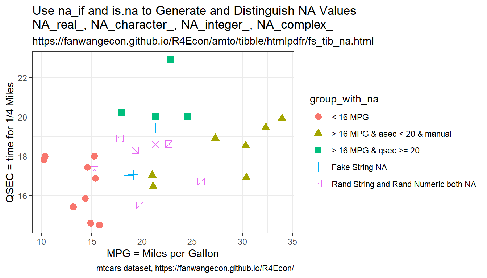

Chapter 2 Manipulate and Summarize Dataframes
2.1 Variables in Dataframes
2.1.1 Generate Dataframe
Go back to fan’s REconTools research support package, R4Econ examples page, PkgTestR packaging guide, or Stat4Econ course page.
2.1.1.1 Simple Dataframe, Name Columns
# 5 by 3 matrix
mt_rnorm_a <- matrix(rnorm(4,mean=0,sd=1), nrow=5, ncol=3)
# Column Names
ar_st_varnames <- c('id','var1','varb','vartheta')
# Combine to tibble, add name col1, col2, etc.
tb_combine <- as_tibble(mt_rnorm_a) %>%
rowid_to_column(var = "id") %>%
rename_all(~c(ar_st_varnames))
# Display
kable(tb_combine) %>% kable_styling_fc()| id | var1 | varb | vartheta |
|---|---|---|---|
| 1 | -1.1655448 | -0.8185157 | 0.6849361 |
| 2 | -0.8185157 | 0.6849361 | -0.3200564 |
| 3 | 0.6849361 | -0.3200564 | -1.1655448 |
| 4 | -0.3200564 | -1.1655448 | -0.8185157 |
| 5 | -1.1655448 | -0.8185157 | 0.6849361 |
2.1.1.2 Dataframe with Row and Column Names and Export
First, we generate an empty matrix. Second, we compute values to fill in matrix cells.
# an NA matrix
it_nrow <- 5
it_ncol <- 3
mt_na <- matrix(NA, nrow=it_nrow, ncol=it_ncol)
# array of nrow values
ar_it_nrow <- seq(1, it_nrow)
ar_it_ncol <- seq(1, it_ncol)
# Generate values in matrix
for (it_row in ar_it_nrow) {
for (it_col in ar_it_ncol) {
print(glue::glue("row={it_row} and col={it_col}"))
mt_na[it_row, it_col] = it_row*it_col + it_row + it_col
}
}## row=1 and col=1
## row=1 and col=2
## row=1 and col=3
## row=2 and col=1
## row=2 and col=2
## row=2 and col=3
## row=3 and col=1
## row=3 and col=2
## row=3 and col=3
## row=4 and col=1
## row=4 and col=2
## row=4 and col=3
## row=5 and col=1
## row=5 and col=2
## row=5 and col=3| 3 | 5 | 7 |
| 5 | 8 | 11 |
| 7 | 11 | 15 |
| 9 | 14 | 19 |
| 11 | 17 | 23 |
Third, we label the rows and the columns. Note that we will include the column names as column names, but the row names will be included as a variable.
# Column Names
ar_st_col_names <- paste0('colval=', ar_it_ncol)
ar_st_row_names <- paste0('rowval=', ar_it_nrow)
# Create tibble, and add in column and row names
tb_row_col_named <- as_tibble(mt_na) %>%
rename_all(~c(ar_st_col_names)) %>%
mutate(row_name = ar_st_row_names) %>%
select(row_name, everything())
# Display
kable(tb_row_col_named) %>% kable_styling_fc()| row_name | colval=1 | colval=2 | colval=3 |
|---|---|---|---|
| rowval=1 | 3 | 5 | 7 |
| rowval=2 | 5 | 8 | 11 |
| rowval=3 | 7 | 11 | 15 |
| rowval=4 | 9 | 14 | 19 |
| rowval=5 | 11 | 17 | 23 |
Finally, we generate a file name for exporting this tibble to a CSV file. We create a file name with a time stamp.
# Create a file name with date stamp
st_datetime <- base::format(Sys.time(), "%Y%m%d-%H%M%S")
# Copying a fixed date to avoid generating multiple testing files
# The date string below is generated by Sys.time()
st_snm_filename <- paste0("tibble_out_test_", st_datetime, '.csv')
# Create a file name with the time stamp.
spn_file_path = file.path(
"C:", "Users", "fan",
"R4Econ", "amto", "tibble", "_file",
st_snm_filename,
fsep = .Platform$file.sep)
# Save to file
write_csv(tb_row_col_named, spn_file_path)2.1.1.3 Generate Tibble given Matrixes and Arrays
Given Arrays and Matrixes, Generate Tibble and Name Variables/Columns
- naming tibble columns
- tibble variable names
- dplyr rename tibble
- dplyr rename tibble all variables
- dplyr rename all columns by index
- dplyr tibble add index column
- see also: SO-51205520
# Base Inputs
ar_col <- c(-1,+1)
mt_rnorm_a <- matrix(rnorm(4,mean=0,sd=1), nrow=2, ncol=2)
mt_rnorm_b <- matrix(rnorm(4,mean=0,sd=1), nrow=2, ncol=4)
# Combine Matrix
mt_combine <- cbind(ar_col, mt_rnorm_a, mt_rnorm_b)
colnames(mt_combine) <- c('ar_col',
paste0('matcolvar_grpa_', seq(1,dim(mt_rnorm_a)[2])),
paste0('matcolvar_grpb_', seq(1,dim(mt_rnorm_b)[2])))
# Variable Names
ar_st_varnames <- c('var_one',
paste0('tibcolvar_ga_', c(1,2)),
paste0('tibcolvar_gb_', c(1,2,3,4)))
# Combine to tibble, add name col1, col2, etc.
tb_combine <- as_tibble(mt_combine) %>% rename_all(~c(ar_st_varnames))
# Add an index column to the dataframe, ID column
tb_combine <- tb_combine %>% rowid_to_column(var = "ID")
# Change all gb variable names
tb_combine <- tb_combine %>%
rename_at(vars(starts_with("tibcolvar_gb_")),
funs(str_replace(., "_gb_", "_gbrenamed_")))
# Tibble back to matrix
mt_tb_combine_back <- data.matrix(tb_combine)
# Display
kable(mt_combine) %>% kable_styling_fc_wide()| ar_col | matcolvar_grpa_1 | matcolvar_grpa_2 | matcolvar_grpb_1 | matcolvar_grpb_2 | matcolvar_grpb_3 | matcolvar_grpb_4 |
|---|---|---|---|---|---|---|
| -1 | -1.3115224 | -0.1294107 | -0.1513960 | -3.2273228 | -0.1513960 | -3.2273228 |
| 1 | -0.5996083 | 0.8867361 | 0.3297912 | -0.7717918 | 0.3297912 | -0.7717918 |
| ID | var_one | tibcolvar_ga_1 | tibcolvar_ga_2 | tibcolvar_gbrenamed_1 | tibcolvar_gbrenamed_2 | tibcolvar_gbrenamed_3 | tibcolvar_gbrenamed_4 |
|---|---|---|---|---|---|---|---|
| 1 | -1 | -1.3115224 | -0.1294107 | -0.1513960 | -3.2273228 | -0.1513960 | -3.2273228 |
| 2 | 1 | -0.5996083 | 0.8867361 | 0.3297912 | -0.7717918 | 0.3297912 | -0.7717918 |
| ID | var_one | tibcolvar_ga_1 | tibcolvar_ga_2 | tibcolvar_gbrenamed_1 | tibcolvar_gbrenamed_2 | tibcolvar_gbrenamed_3 | tibcolvar_gbrenamed_4 |
|---|---|---|---|---|---|---|---|
| 1 | -1 | -1.3115224 | -0.1294107 | -0.1513960 | -3.2273228 | -0.1513960 | -3.2273228 |
| 2 | 1 | -0.5996083 | 0.8867361 | 0.3297912 | -0.7717918 | 0.3297912 | -0.7717918 |
2.1.1.4 Generate a Table from Lists
We run some function, whose outputs are named list, we store the values of the named list as additional rows into a dataframe whose column names are the names from named list.
First, we generate the function that returns named lists.
# Define a function
ffi_list_generator <- function(it_seed=123) {
set.seed(it_seed)
fl_abc <- rnorm(1)
ar_efg <- rnorm(3)
st_word <- sample(LETTERS, 5, replace = TRUE)
ls_return <- list("abc" = fl_abc, "efg" = ar_efg, "opq" = st_word)
return(ls_return)
}
# Run the function
it_seed=123
ls_return <- ffi_list_generator(it_seed)
print(ls_return)## $abc
## [1] -0.5604756
##
## $efg
## [1] -0.23017749 1.55870831 0.07050839
##
## $opq
## [1] "K" "E" "T" "N" "V"Second, we list of lists by running the function above with different starting seeds. We store results in a two-dimensional list.
# Run function once to get length
ls_return_test <- ffi_list_generator(it_seed=123)
it_list_len <- length(ls_return_test)
# list of list frame
it_list_of_list_len <- 5
ls_ls_return <- vector(mode = "list", length = it_list_of_list_len*it_list_len)
dim(ls_ls_return) <- c(it_list_of_list_len, it_list_len)
# Fill list of list
ar_seeds <- seq(123, 123 + it_list_of_list_len - 1)
it_ctr <- 0
for (it_seed in ar_seeds) {
print(it_seed)
it_ctr <- it_ctr + 1
ls_return <- ffi_list_generator(it_seed)
ls_ls_return[it_ctr,] <- ls_return
}## [1] 123
## [1] 124
## [1] 125
## [1] 126
## [1] 127## [,1] [,2] [,3]
## [1,] -0.5604756 numeric,3 character,5
## [2,] -1.385071 numeric,3 character,5
## [3,] 0.933327 numeric,3 character,5
## [4,] 0.366734 numeric,3 character,5
## [5,] -0.5677337 numeric,3 character,5Third, we convert the list to a tibble dataframe. Prior to conversion we add names to the 1st and 2nd dimensions of the list. Then we print the results.
# get names from named list
ar_st_names <- names(ls_return_test)
dimnames(ls_ls_return)[[2]] <- ar_st_names
dimnames(ls_ls_return)[[1]] <- paste0('seed_', ar_seeds)
# Convert to dataframe
tb_ls_ls_return <- as_tibble(ls_ls_return)
# print
kable(tb_ls_ls_return) %>% kable_styling_fc()| abc | efg | opq |
|---|---|---|
| -0.5604756 | -0.23017749, 1.55870831, 0.07050839 | K, E, T, N, V |
| -1.385071 | 0.03832318, -0.76303016, 0.21230614 | J, A, O, T, N |
| 0.933327 | -0.52503178, 1.81443979, 0.08304562 | C, T, M, S, K |
| 0.366734 | 0.3964520, -0.7318437, 0.9462364 | Z, L, J, Y, P |
| -0.5677337 | -0.814760579, -0.493939596, 0.001818846 | Y, C, O, F, U |
Fourth, to export list to csv file, we need to unlist list contents. See also Create a tibble containing list columns
2.1.1.5 Rename Tibble with Numeric Column Names
After reshaping, often could end up with variable names that are all numeric, intgers for example, how to rename these variables to add a common prefix for example.
# Base Inputs
ar_col <- c(-1,+1)
mt_rnorm_c <- matrix(rnorm(4,mean=0,sd=1), nrow=5, ncol=10)
mt_combine <- cbind(ar_col, mt_rnorm_c)
# Variable Names
ar_it_cols_ctr <- seq(1, dim(mt_rnorm_c)[2])
ar_st_varnames <- c('var_one', ar_it_cols_ctr)
# Combine to tibble, add name col1, col2, etc.
tb_combine <- as_tibble(mt_combine) %>% rename_all(~c(ar_st_varnames))
# Add an index column to the dataframe, ID column
tb_combine_ori <- tb_combine %>% rowid_to_column(var = "ID")
# Change all gb variable names
tb_combine <- tb_combine_ori %>%
rename_at(
vars(num_range('',ar_it_cols_ctr)),
funs(paste0("rho", . , 'var'))
)
# Display
kable(tb_combine_ori) %>% kable_styling_fc_wide()| ID | var_one | 1 | 2 | 3 | 4 | 5 | 6 | 7 | 8 | 9 | 10 |
|---|---|---|---|---|---|---|---|---|---|---|---|
| 1 | -1 | -0.1255472 | 0.5646199 | 0.1335086 | -0.1059632 | -0.1255472 | 0.5646199 | 0.1335086 | -0.1059632 | -0.1255472 | 0.5646199 |
| 2 | 1 | 0.5646199 | 0.1335086 | -0.1059632 | -0.1255472 | 0.5646199 | 0.1335086 | -0.1059632 | -0.1255472 | 0.5646199 | 0.1335086 |
| 3 | -1 | 0.1335086 | -0.1059632 | -0.1255472 | 0.5646199 | 0.1335086 | -0.1059632 | -0.1255472 | 0.5646199 | 0.1335086 | -0.1059632 |
| 4 | 1 | -0.1059632 | -0.1255472 | 0.5646199 | 0.1335086 | -0.1059632 | -0.1255472 | 0.5646199 | 0.1335086 | -0.1059632 | -0.1255472 |
| 5 | -1 | -0.1255472 | 0.5646199 | 0.1335086 | -0.1059632 | -0.1255472 | 0.5646199 | 0.1335086 | -0.1059632 | -0.1255472 | 0.5646199 |
| ID | var_one | rho1var | rho2var | rho3var | rho4var | rho5var | rho6var | rho7var | rho8var | rho9var | rho10var |
|---|---|---|---|---|---|---|---|---|---|---|---|
| 1 | -1 | -0.1255472 | 0.5646199 | 0.1335086 | -0.1059632 | -0.1255472 | 0.5646199 | 0.1335086 | -0.1059632 | -0.1255472 | 0.5646199 |
| 2 | 1 | 0.5646199 | 0.1335086 | -0.1059632 | -0.1255472 | 0.5646199 | 0.1335086 | -0.1059632 | -0.1255472 | 0.5646199 | 0.1335086 |
| 3 | -1 | 0.1335086 | -0.1059632 | -0.1255472 | 0.5646199 | 0.1335086 | -0.1059632 | -0.1255472 | 0.5646199 | 0.1335086 | -0.1059632 |
| 4 | 1 | -0.1059632 | -0.1255472 | 0.5646199 | 0.1335086 | -0.1059632 | -0.1255472 | 0.5646199 | 0.1335086 | -0.1059632 | -0.1255472 |
| 5 | -1 | -0.1255472 | 0.5646199 | 0.1335086 | -0.1059632 | -0.1255472 | 0.5646199 | 0.1335086 | -0.1059632 | -0.1255472 | 0.5646199 |
2.1.1.6 Tibble Row and Column and Summarize
Show what is in the table: 1, column and row names; 2, contents inside table.
## [1] "1" "2" "3" "4" "5" "6" "7" "8" "9" "10" "11" "12" "13"
## [14] "14" "15" "16" "17" "18" "19" "20" "21" "22" "23" "24" "25" "26"
## [27] "27" "28" "29" "30" "31" "32" "33" "34" "35" "36" "37" "38" "39"
## [40] "40" "41" "42" "43" "44" "45" "46" "47" "48" "49" "50" "51" "52"
## [53] "53" "54" "55" "56" "57" "58" "59" "60" "61" "62" "63" "64" "65"
## [66] "66" "67" "68" "69" "70" "71" "72" "73" "74" "75" "76" "77" "78"
## [79] "79" "80" "81" "82" "83" "84" "85" "86" "87" "88" "89" "90" "91"
## [92] "92" "93" "94" "95" "96" "97" "98" "99" "100" "101" "102" "103" "104"
## [105] "105" "106" "107" "108" "109" "110" "111" "112" "113" "114" "115" "116" "117"
## [118] "118" "119" "120" "121" "122" "123" "124" "125" "126" "127" "128" "129" "130"
## [131] "131" "132" "133" "134" "135" "136" "137" "138" "139" "140" "141" "142" "143"
## [144] "144" "145" "146" "147" "148" "149" "150"## [1] "Sepal.Length" "Sepal.Width" "Petal.Length" "Petal.Width" "Species"## [1] "Sepal.Length" "Sepal.Width" "Petal.Length" "Petal.Width" "Species"## Sepal.Length Sepal.Width Petal.Length Petal.Width Species
## Min. :4.300 Min. :2.000 Min. :1.000 Min. :0.100 setosa :50
## 1st Qu.:5.100 1st Qu.:2.800 1st Qu.:1.600 1st Qu.:0.300 versicolor:50
## Median :5.800 Median :3.000 Median :4.350 Median :1.300 virginica :50
## Mean :5.843 Mean :3.057 Mean :3.758 Mean :1.199
## 3rd Qu.:6.400 3rd Qu.:3.300 3rd Qu.:5.100 3rd Qu.:1.800
## Max. :7.900 Max. :4.400 Max. :6.900 Max. :2.5002.1.1.7 Sorting and Rank
2.1.1.7.1 Sorting
- dplyr arrange desc reverse
- dplyr sort
# Sort in Ascending Order
tb_iris %>% select(Species, Sepal.Length, everything()) %>%
arrange(Species, Sepal.Length) %>% head(10) %>%
kable() %>% kable_styling_fc()| Species | Sepal.Length | Sepal.Width | Petal.Length | Petal.Width |
|---|---|---|---|---|
| setosa | 4.3 | 3.0 | 1.1 | 0.1 |
| setosa | 4.4 | 2.9 | 1.4 | 0.2 |
| setosa | 4.4 | 3.0 | 1.3 | 0.2 |
| setosa | 4.4 | 3.2 | 1.3 | 0.2 |
| setosa | 4.5 | 2.3 | 1.3 | 0.3 |
| setosa | 4.6 | 3.1 | 1.5 | 0.2 |
| setosa | 4.6 | 3.4 | 1.4 | 0.3 |
| setosa | 4.6 | 3.6 | 1.0 | 0.2 |
| setosa | 4.6 | 3.2 | 1.4 | 0.2 |
| setosa | 4.7 | 3.2 | 1.3 | 0.2 |
# Sort in Descending Order
tb_iris %>% select(Species, Sepal.Length, everything()) %>%
arrange(desc(Species), desc(Sepal.Length)) %>% head(10) %>%
kable() %>% kable_styling_fc()| Species | Sepal.Length | Sepal.Width | Petal.Length | Petal.Width |
|---|---|---|---|---|
| virginica | 7.9 | 3.8 | 6.4 | 2.0 |
| virginica | 7.7 | 3.8 | 6.7 | 2.2 |
| virginica | 7.7 | 2.6 | 6.9 | 2.3 |
| virginica | 7.7 | 2.8 | 6.7 | 2.0 |
| virginica | 7.7 | 3.0 | 6.1 | 2.3 |
| virginica | 7.6 | 3.0 | 6.6 | 2.1 |
| virginica | 7.4 | 2.8 | 6.1 | 1.9 |
| virginica | 7.3 | 2.9 | 6.3 | 1.8 |
| virginica | 7.2 | 3.6 | 6.1 | 2.5 |
| virginica | 7.2 | 3.2 | 6.0 | 1.8 |
2.1.1.7.2 Create a Ranking Variable
We use dplyr’s ranking functions to generate different types of ranking variables.
The example below demonstrates the differences between the functions row_number(), min_rank(), and dense_rank().
- row_number: Given 10 observations, generates index from 1 to 10, ties are given different ranks.
- min_rank: Given 10 observations, generates rank where second-rank ties are both given “silver”, and the 4th highest ranked variable not given medal.
- dense_rank: Given 10 observations, generates rank where second-rank ties are both given “silver†(2nd rank), and the 4th highest ranked variable is given “bronze†(3rd rank), there are no gaps between ranks.
Note that we have “desc(var_name)†in order to generate the variable based on descending sort of the the “var_name†variable.
tb_iris %>%
select(Species, Sepal.Length) %>% head(10) %>%
mutate(row_number = row_number(desc(Sepal.Length)),
min_rank = min_rank(desc(Sepal.Length)),
dense_rank = dense_rank(desc(Sepal.Length))) %>%
kable(caption = "Ranking variable") %>% kable_styling_fc()| Species | Sepal.Length | row_number | min_rank | dense_rank |
|---|---|---|---|---|
| setosa | 5.1 | 2 | 2 | 2 |
| setosa | 4.9 | 5 | 5 | 4 |
| setosa | 4.7 | 7 | 7 | 5 |
| setosa | 4.6 | 8 | 8 | 6 |
| setosa | 5.0 | 3 | 3 | 3 |
| setosa | 5.4 | 1 | 1 | 1 |
| setosa | 4.6 | 9 | 8 | 6 |
| setosa | 5.0 | 4 | 3 | 3 |
| setosa | 4.4 | 10 | 10 | 7 |
| setosa | 4.9 | 6 | 5 | 4 |
2.1.1.8 REconTools Summarize over Tible
Use R4Econ’s summary tool.
df_summ_stats <- REconTools::ff_summ_percentiles(tb_iris)
kable(t(df_summ_stats)) %>% kable_styling_fc_wide()| stats | n | unique | NAobs | ZEROobs | mean | sd | cv | min | p01 | p05 | p10 | p25 | p50 | p75 | p90 | p95 | p99 | max |
| Petal.Length | 150 | 43 | 0 | 0 | 3.758000 | 1.7652982 | 0.4697441 | 1.0 | 1.149 | 1.300 | 1.4 | 1.6 | 4.35 | 5.1 | 5.80 | 6.100 | 6.700 | 6.9 |
| Petal.Width | 150 | 22 | 0 | 0 | 1.199333 | 0.7622377 | 0.6355511 | 0.1 | 0.100 | 0.200 | 0.2 | 0.3 | 1.30 | 1.8 | 2.20 | 2.300 | 2.500 | 2.5 |
| Sepal.Length | 150 | 35 | 0 | 0 | 5.843333 | 0.8280661 | 0.1417113 | 4.3 | 4.400 | 4.600 | 4.8 | 5.1 | 5.80 | 6.4 | 6.90 | 7.255 | 7.700 | 7.9 |
| Sepal.Width | 150 | 23 | 0 | 0 | 3.057333 | 0.4358663 | 0.1425642 | 2.0 | 2.200 | 2.345 | 2.5 | 2.8 | 3.00 | 3.3 | 3.61 | 3.800 | 4.151 | 4.4 |
2.1.2 Generate Categorical Variables
Go back to fan’s REconTools research support package, R4Econ examples page, PkgTestR packaging guide, or Stat4Econ course page.
2.1.2.1 Cut Continuous Variable to Categorical Variable
We have a continuous variable, we cut it with explicitly specified cuts to generate a categorical variable, and label it. We will use base::cut().
# break points to specific
fl_min_mpg <- min(mtcars$mpg)
fl_max_mpg <- max(mtcars$mpg)
ar_fl_cuts <- c(10, 20, 30, 40)
# generate labels
ar_st_cuts_lab <- c("10<=mpg<20", "20<=mpg<30", "30<=mpg<40")
# generate new variable
mtcars_cate <- mtcars %>%
tibble::rownames_to_column(var = "cars") %>%
mutate(mpg_grp = base::cut(mpg,
breaks = ar_fl_cuts,
labels = ar_st_cuts_lab,
# if right is FALSE, interval is closed on the left
right = FALSE
)
) %>% select(cars, mpg_grp, mpg) %>%
arrange(mpg) %>% group_by(mpg_grp) %>%
slice_head(n=3)
# Display
st_caption <- "Cuts a continuous var to a categorical var with labels"
kable(mtcars_cate,
caption = st_caption
) %>% kable_styling_fc()| cars | mpg_grp | mpg |
|---|---|---|
| Cadillac Fleetwood | 10<=mpg<20 | 10.4 |
| Lincoln Continental | 10<=mpg<20 | 10.4 |
| Camaro Z28 | 10<=mpg<20 | 13.3 |
| Mazda RX4 | 20<=mpg<30 | 21.0 |
| Mazda RX4 Wag | 20<=mpg<30 | 21.0 |
| Hornet 4 Drive | 20<=mpg<30 | 21.4 |
| Honda Civic | 30<=mpg<40 | 30.4 |
| Lotus Europa | 30<=mpg<40 | 30.4 |
| Fiat 128 | 30<=mpg<40 | 32.4 |
2.1.2.2 Factor, Label, Cross and Graph
Generate a Scatter plot with different colors representing different categories. There are multiple underlying factor/categorical variables, for example two binary variables. Generate scatter plot with colors for the combinations of these two binary variables.
We combine here the vs and am variables from the mtcars dataset. vs is engine shape, am is auto or manual shift. We will generate a scatter plot of mpg and qsec over four categories with different colors.
- am: Transmission (0 = automatic, 1 = manual)
- vs: Engine (0 = V-shaped, 1 = straight)
- mpg: miles per galon
- qsec: 1/4 mile time
# First make sure these are factors
tb_mtcars <- as_tibble(mtcars) %>%
mutate(vs = as_factor(vs), am = as_factor(am))
# Second Label the Factors
am_levels <- c(auto_shift = "0", manual_shift = "1")
vs_levels <- c(vshaped_engine = "0", straight_engine = "1")
tb_mtcars <- tb_mtcars %>%
mutate(vs = fct_recode(vs, !!!vs_levels),
am = fct_recode(am, !!!am_levels))
# Third Combine Factors
tb_mtcars_selected <- tb_mtcars %>%
mutate(vs_am = fct_cross(vs, am, sep='_', keep_empty = FALSE)) %>%
select(mpg, qsec, vs_am)
# relabel interaction variables
am_vs_levels <- c("vshape (engine) and auto (shift)" = "vshaped_engine_auto_shift",
"vshape (engine) and manual (shift)" = "vshaped_engine_manual_shift",
"straight (engine) and auto (shift)" = "straight_engine_auto_shift",
"straight (engine) and manual (shift)" = "straight_engine_manual_shift")
tb_mtcars_selected <- tb_mtcars_selected %>%
mutate(vs_am = fct_recode(vs_am, !!!am_vs_levels))
# Show
print(tb_mtcars_selected[1:10,])Now we generate scatter plot based on the combined factors
# Labeling
st_title <- paste0('Distribution of MPG and QSEC from mtcars')
st_subtitle <- paste0('https://fanwangecon.github.io/',
'R4Econ/amto/tibble/htmlpdfr/fs_tib_factors.html')
st_caption <- paste0('mtcars dataset, ',
'https://fanwangecon.github.io/R4Econ/')
st_x_label <- 'MPG = Miles per Gallon'
st_y_label <- 'QSEC = time for 1/4 Miles'
# Graphing
plt_mtcars_scatter <-
ggplot(tb_mtcars_selected,
aes(x=mpg, y=qsec, colour=vs_am, shape=vs_am)) +
geom_jitter(size=3, width = 0.15) +
labs(title = st_title, subtitle = st_subtitle,
x = st_x_label, y = st_y_label, caption = st_caption) +
theme_bw()
# show
print(plt_mtcars_scatter)2.1.3 Drawly Random Rows
Go back to fan’s REconTools research support package, R4Econ examples page, PkgTestR packaging guide, or Stat4Econ course page.
2.1.3.1 Draw Random Subset of Sample
- r random discrete
We have a sample of N individuals in some dataframe. Draw without replacement a subset \(M<N\) of rows.
# parameters, it_M < it_N
it_N <- 10
it_M <- 5
# Draw it_m from indexed list of it_N
set.seed(123)
ar_it_rand_idx <- sample(it_N, it_M, replace=FALSE)
# dataframe
df_full <- as_tibble(matrix(rnorm(4,mean=0,sd=1), nrow=it_N, ncol=4)) %>% rowid_to_column(var = "ID")
# random Subset
df_rand_sub_a <- df_full[ar_it_rand_idx,]
# Random subset also
df_rand_sub_b <- df_full[sample(dim(df_full)[1], it_M, replace=FALSE),]
# Print
# Display
kable(df_full) %>% kable_styling_fc()| ID | V1 | V2 | V3 | V4 |
|---|---|---|---|---|
| 1 | 0.1292877 | 0.4609162 | 0.1292877 | 0.4609162 |
| 2 | 1.7150650 | -1.2650612 | 1.7150650 | -1.2650612 |
| 3 | 0.4609162 | 0.1292877 | 0.4609162 | 0.1292877 |
| 4 | -1.2650612 | 1.7150650 | -1.2650612 | 1.7150650 |
| 5 | 0.1292877 | 0.4609162 | 0.1292877 | 0.4609162 |
| 6 | 1.7150650 | -1.2650612 | 1.7150650 | -1.2650612 |
| 7 | 0.4609162 | 0.1292877 | 0.4609162 | 0.1292877 |
| 8 | -1.2650612 | 1.7150650 | -1.2650612 | 1.7150650 |
| 9 | 0.1292877 | 0.4609162 | 0.1292877 | 0.4609162 |
| 10 | 1.7150650 | -1.2650612 | 1.7150650 | -1.2650612 |
| ID | V1 | V2 | V3 | V4 |
|---|---|---|---|---|
| 3 | 0.4609162 | 0.1292877 | 0.4609162 | 0.1292877 |
| 10 | 1.7150650 | -1.2650612 | 1.7150650 | -1.2650612 |
| 2 | 1.7150650 | -1.2650612 | 1.7150650 | -1.2650612 |
| 8 | -1.2650612 | 1.7150650 | -1.2650612 | 1.7150650 |
| 6 | 1.7150650 | -1.2650612 | 1.7150650 | -1.2650612 |
| ID | V1 | V2 | V3 | V4 |
|---|---|---|---|---|
| 5 | 0.1292877 | 0.4609162 | 0.1292877 | 0.4609162 |
| 3 | 0.4609162 | 0.1292877 | 0.4609162 | 0.1292877 |
| 9 | 0.1292877 | 0.4609162 | 0.1292877 | 0.4609162 |
| 1 | 0.1292877 | 0.4609162 | 0.1292877 | 0.4609162 |
| 4 | -1.2650612 | 1.7150650 | -1.2650612 | 1.7150650 |
2.1.3.2 Random Subset of Panel
There are \(N\) individuals, each could be observed \(M\) times, but then select a subset of rows only, so each person is randomly observed only a subset of times. Specifically, there there are 3 unique students with student ids, and the second variable shows the random dates in which the student showed up in class, out of the 10 classes available.
# Define
it_N <- 3
it_M <- 10
svr_id <- 'student_id'
# dataframe
set.seed(123)
df_panel_rand <- as_tibble(matrix(it_M, nrow=it_N, ncol=1)) %>%
rowid_to_column(var = svr_id) %>%
uncount(V1) %>%
group_by(!!sym(svr_id)) %>% mutate(date = row_number()) %>%
ungroup() %>% mutate(in_class = case_when(rnorm(n(),mean=0,sd=1) < 0 ~ 1, TRUE ~ 0)) %>%
dplyr::filter(in_class == 1) %>% select(!!sym(svr_id), date) %>%
rename(date_in_class = date)
# Print
kable(df_panel_rand) %>% kable_styling_fc()| student_id | date_in_class |
|---|---|
| 1 | 1 |
| 1 | 2 |
| 1 | 8 |
| 1 | 9 |
| 1 | 10 |
| 2 | 5 |
| 2 | 8 |
| 2 | 10 |
| 3 | 1 |
| 3 | 2 |
| 3 | 3 |
| 3 | 4 |
| 3 | 5 |
| 3 | 6 |
| 3 | 9 |
2.1.4 Generate Variables Conditional On Others
Go back to fan’s REconTools research support package, R4Econ examples page, PkgTestR packaging guide, or Stat4Econ course page.
2.1.4.1 Categorical Variable based on Several Variables
Given several other variables, and generate a new variable when these varaibles satisfy conditions. Note that case_when are ifelse type statements. So below
- group one is below 16 MPG
- when do qsec >= 20 second line that is elseif, only those that are >=16 are considered here
- then think about two dimensional mpg and qsec grid, the lower-right area, give another category to manual cars in that group
First, we generate categorical variables based on the characteristics of several variables.
# Get mtcars
df_mtcars <- mtcars
# case_when with mtcars
df_mtcars <- df_mtcars %>%
mutate(
mpg_qsec_am_grp =
case_when(
mpg < 16 ~ "< 16 MPG",
qsec >= 20 ~ "> 16 MPG & qsec >= 20",
am == 1 ~ "> 16 MPG & asec < 20 & manual",
TRUE ~ "Others"
)
)Now we generate scatter plot based on the combined factors
# Labeling
st_title <- paste0("Use case_when To Generate ifelse Groupings")
st_subtitle <- paste0(
"https://fanwangecon.github.io/",
"R4Econ/amto/tibble/htmlpdfr/fs_tib_na.html"
)
st_caption <- paste0(
"mtcars dataset, ",
"https://fanwangecon.github.io/R4Econ/"
)
st_x_label <- "MPG = Miles per Gallon"
st_y_label <- "QSEC = time for 1/4 Miles"
# Graphing
plt_mtcars_casewhen_scatter <-
ggplot(
df_mtcars,
aes(
x = mpg, y = qsec,
colour = mpg_qsec_am_grp,
shape = mpg_qsec_am_grp
)
) +
geom_jitter(size = 3, width = 0.15) +
labs(
title = st_title, subtitle = st_subtitle,
x = st_x_label, y = st_y_label, caption = st_caption
) +
theme_bw()
# show
print(plt_mtcars_casewhen_scatter)2.1.4.2 Categorical Variables based on one Continuous Variable
We generate one categorical variable for gear, based on “continuous†gear values. Note that the same categorical label appears for gear is 3 as well as gear is 5.
# Generate a categorical variable
df_mtcars <- df_mtcars %>%
mutate(gear_cate = case_when(
gear == 3 ~ "gear is 3",
gear == 4 ~ "gear is 4",
gear == 5 & hp <= 110 ~ "gear 5 hp les sequal 110",
gear == 5 & hp > 110 & hp <= 200 ~ "gear 5 hp 110 to 130",
TRUE ~ "otherwise"
))
# Tabulate
df_mtcars_gear_tb <- df_mtcars %>%
group_by(gear_cate, gear) %>%
tally() %>%
spread(gear_cate, n)
# Display
st_title <- "Categorical from continuous with non-continuous values matching to same key"
df_mtcars_gear_tb %>% kable(caption = st_title) %>%
kable_styling_fc()| gear | gear 5 hp 110 to 130 | gear 5 hp les sequal 110 | gear is 3 | gear is 4 | otherwise |
|---|---|---|---|---|---|
| 3 | NA | NA | 15 | NA | NA |
| 4 | NA | NA | NA | 12 | NA |
| 5 | 2 | 1 | NA | NA | 2 |
2.1.4.3 Generate NA values if Variables have Certain Value
In the example below, in one line:
- generate a random standard normal vector
- two set na methods:
- if the value of the standard normal is negative, set value to -999, otherwise MPG, replace the value -999 with NA
- case_when only with type specific NA values
- Assigning NA yields error in case_when
- note we need to conform NA to type
- generate new categorical variable based on NA condition using is.na with both string and numeric NAs jointly considered.
- fake NA string to be printed on chart
# Get mtcars
df_mtcars <- mtcars
# Make some values of mpg randomly NA
# the NA has to conform to the type of the remaining values for the new variable
# NA_real_, NA_character_, NA_integer_, NA_complex_
set.seed(2341)
df_mtcars <- df_mtcars %>%
mutate(mpg_wth_NA1 = na_if(
case_when(
rnorm(n(), mean = 0, sd = 1) < 0 ~ -999,
TRUE ~ mpg
),
-999
)) %>%
mutate(mpg_wth_NA2 = case_when(
rnorm(n(), mean = 0, sd = 1) < 0 ~ NA_real_,
TRUE ~ mpg
)) %>%
mutate(mpg_wth_NA3 = case_when(
rnorm(n(), mean = 0, sd = 1) < 0 ~ NA_character_,
TRUE ~ "shock > 0 string"
))
# Generate New Variables based on if mpg_wth_NA is NA or not
# same variable as above, but now first a category based on if NA
# And we generate a fake string "NA" variable, this is not NA
# the String NA allows for it to be printed on figure
df_mtcars <- df_mtcars %>%
mutate(
group_with_na =
case_when(
is.na(mpg_wth_NA2) & is.na(mpg_wth_NA3) ~
"Rand String and Rand Numeric both NA",
mpg < 16 ~ "< 16 MPG",
qsec >= 20 ~ "> 16 MPG & qsec >= 20",
am == 1 ~ "> 16 MPG & asec < 20 & manual",
TRUE ~ "Fake String NA"
)
)
# show
kable(head(df_mtcars %>% select(starts_with("mpg")), 13)) %>%
kable_styling_fc()| mpg | mpg_wth_NA1 | mpg_wth_NA2 | mpg_wth_NA3 | |
|---|---|---|---|---|
| Mazda RX4 | 21.0 | NA | NA | shock > 0 string |
| Mazda RX4 Wag | 21.0 | 21.0 | 21.0 | NA |
| Datsun 710 | 22.8 | NA | NA | NA |
| Hornet 4 Drive | 21.4 | NA | 21.4 | NA |
| Hornet Sportabout | 18.7 | NA | 18.7 | NA |
| Valiant | 18.1 | 18.1 | NA | shock > 0 string |
| Duster 360 | 14.3 | 14.3 | NA | shock > 0 string |
| Merc 240D | 24.4 | NA | 24.4 | NA |
| Merc 230 | 22.8 | 22.8 | 22.8 | NA |
| Merc 280 | 19.2 | 19.2 | NA | NA |
| Merc 280C | 17.8 | NA | NA | NA |
| Merc 450SE | 16.4 | 16.4 | 16.4 | NA |
| Merc 450SL | 17.3 | NA | NA | shock > 0 string |
# # Setting to NA
# df.reg.use <- df.reg.guat %>% filter(!!sym(var.mth) != 0)
# df.reg.use.log <- df.reg.use
# df.reg.use.log[which(is.nan(df.reg.use$prot.imputed.log)),] = NA
# df.reg.use.log[which(df.reg.use$prot.imputed.log==Inf),] = NA
# df.reg.use.log[which(df.reg.use$prot.imputed.log==-Inf),] = NA
# df.reg.use.log <- df.reg.use.log %>% drop_na(prot.imputed.log)
# # df.reg.use.log$prot.imputed.logNow we generate scatter plot based on the combined factors, but now with the NA category
# Labeling
st_title <- paste0(
"Use na_if and is.na to Generate and Distinguish NA Values\n",
"NA_real_, NA_character_, NA_integer_, NA_complex_"
)
st_subtitle <- paste0(
"https://fanwangecon.github.io/",
"R4Econ/amto/tibble/htmlpdfr/fs_tib_na.html"
)
st_caption <- paste0(
"mtcars dataset, ",
"https://fanwangecon.github.io/R4Econ/"
)
st_x_label <- "MPG = Miles per Gallon"
st_y_label <- "QSEC = time for 1/4 Miles"
# Graphing
plt_mtcars_ifisna_scatter <-
ggplot(
df_mtcars,
aes(
x = mpg, y = qsec,
colour = group_with_na,
shape = group_with_na
)
) +
geom_jitter(size = 3, width = 0.15) +
labs(
title = st_title, subtitle = st_subtitle,
x = st_x_label, y = st_y_label, caption = st_caption
) +
theme_bw()
# show
print(plt_mtcars_ifisna_scatter)
2.1.4.4 Approximate Values Comparison
- r values almost the same
- all.equal
From numeric approximation, often values are very close, and should be set to equal. Use isTRUE(all.equal). In the example below, we randomly generates four arrays. Two of the arrays have slightly higher variance, two arrays have slightly lower variance. They sd are to be 10 times below or 10 times above the tolerance comparison level. The values are not the same in any of the columns, but by allowing for almost true given some tolerance level, in the low standard deviation case, the values differences are within tolerance, so they are equal.
This is an essential issue when dealing with optimization results.
# Set tolerance
tol_lvl <- 1.5e-3
sd_lower_than_tol <- tol_lvl / 10
sd_higher_than_tol <- tol_lvl * 10
# larger SD
set.seed(123)
mt_runif_standard <- matrix(rnorm(10, mean = 0, sd = sd_higher_than_tol), nrow = 5, ncol = 2)
# small SD
set.seed(123)
mt_rnorm_small_sd <- matrix(rnorm(10, mean = 0, sd = sd_lower_than_tol), nrow = 5, ncol = 2)
# Generates Random Matirx
tb_rnorm_runif <- as_tibble(cbind(mt_rnorm_small_sd, mt_runif_standard))
# Are Variables the same, not for strict comparison
tb_rnorm_runif_approxi_same <- tb_rnorm_runif %>%
mutate(
V1_V2_ALMOST_SAME =
case_when(
isTRUE(all.equal(V1, V2, tolerance = tol_lvl)) ~
paste0("TOL=", sd_lower_than_tol, ", SAME ALMOST"),
TRUE ~
paste0("TOL=", sd_lower_than_tol, ", NOT SAME ALMOST")
)
) %>%
mutate(
V3_V4_ALMOST_SAME =
case_when(
isTRUE(all.equal(V3, V4, tolerance = tol_lvl)) ~
paste0("TOL=", sd_higher_than_tol, ", SAME ALMOST"),
TRUE ~
paste0("TOL=", sd_higher_than_tol, ", NOT SAME ALMOST")
)
)
# Pring
kable(tb_rnorm_runif_approxi_same) %>% kable_styling_fc_wide()| V1 | V2 | V3 | V4 | V1_V2_ALMOST_SAME | V3_V4_ALMOST_SAME |
|---|---|---|---|---|---|
| -0.0000841 | 0.0002573 | -0.0084071 | 0.0257260 | TOL=0.00015, SAME ALMOST | TOL=0.015, NOT SAME ALMOST |
| -0.0000345 | 0.0000691 | -0.0034527 | 0.0069137 | TOL=0.00015, SAME ALMOST | TOL=0.015, NOT SAME ALMOST |
| 0.0002338 | -0.0001898 | 0.0233806 | -0.0189759 | TOL=0.00015, SAME ALMOST | TOL=0.015, NOT SAME ALMOST |
| 0.0000106 | -0.0001030 | 0.0010576 | -0.0103028 | TOL=0.00015, SAME ALMOST | TOL=0.015, NOT SAME ALMOST |
| 0.0000194 | -0.0000668 | 0.0019393 | -0.0066849 | TOL=0.00015, SAME ALMOST | TOL=0.015, NOT SAME ALMOST |
2.1.5 String Dataframes
Go back to fan’s REconTools research support package, R4Econ examples page, PkgTestR packaging guide, or Stat4Econ course page.
2.1.5.1 List of Strings to Tibble Datfare
There are several lists of strings, store them as variables in a dataframe.
# Sting data inputs
ls_st_abc <- c('a', 'b', 'c')
ls_st_efg <- c('e', 'f', 'g')
ls_st_opq <- c('o', 'p', 'q')
mt_str = cbind(ls_st_abc, ls_st_efg, ls_st_opq)
# Column Names
ar_st_varnames <- c('id','var1','var2','var3')
# Combine to tibble, add name col1, col2, etc.
tb_st_combine <- as_tibble(mt_str) %>%
rowid_to_column(var = "id") %>%
rename_all(~c(ar_st_varnames))
# Display
kable(tb_st_combine) %>% kable_styling_fc()| id | var1 | var2 | var3 |
|---|---|---|---|
| 1 | a | e | o |
| 2 | b | f | p |
| 3 | c | g | q |
2.1.5.2 Find and Replace
Find and Replace in Dataframe.
# if string value is contained in variable
("bridex.B" %in% (df.reg.out.all$vars_var.y))
# if string value is not contained in variable:
# 1. type is variable name
# 2. Toyota|Mazda are strings to be excluded
filter(mtcars, !grepl('Toyota|Mazda', type))
# filter does not contain string
rs_hgt_prot_log_tidy %>% filter(!str_detect(term, 'prot'))2.2 Counting Observation
2.2.1 Counting and Tabulations
Go back to fan’s REconTools research support package, R4Econ examples page, PkgTestR packaging guide, or Stat4Econ course page.
2.2.1.1 Tabulate Two Categorial Variables
First, we tabulate a dataset, and show categories as rows, and display frequencies.
# We use the mtcars dataset
tb_tab_joint <- mtcars %>%
group_by(gear, am) %>%
tally()
# Display
tb_tab_joint %>%
kable(caption = "cross tabulation, stacked") %>%
kable_styling_fc()| gear | am | n |
|---|---|---|
| 3 | 0 | 15 |
| 4 | 0 | 4 |
| 4 | 1 | 8 |
| 5 | 1 | 5 |
We can present this as cross tabs.
# We use the mtcars dataset
tb_cross_tab <- mtcars %>%
group_by(gear, am) %>%
tally() %>%
spread(am, n)
# Display
tb_cross_tab %>%
kable(caption = "cross tabulation") %>%
kable_styling_fc()| gear | 0 | 1 |
|---|---|---|
| 3 | 15 | NA |
| 4 | 4 | 8 |
| 5 | NA | 5 |
2.2.1.2 Tabulate Once Each Distinct Subgroup
We have two variables variables, am and mpg, the mpg values are not unique. We want to know how many unique mpg levels are there for each am group. We use the dplyr::distinct function to achieve this.
tb_dist_tab <- mtcars %>%
# .keep_all to keep all variables
distinct(am, mpg, .keep_all = TRUE) %>%
group_by(am) %>%
tally()
# Display
tb_dist_tab %>%
kable(caption = "Tabulate distinct groups") %>%
kable_styling_fc()| am | n |
|---|---|
| 0 | 16 |
| 1 | 11 |
2.2.1.3 Expanding to Panel
There are \(N\) individuals, each observed for \(Y_i\) years. We start with a dataframe where individuals are the unit of observation, we expand this to a panel with a row for each of the years that the individual is in the survey for.
Algorithm:
- generate testing frame, the individual attribute dataset with invariant information over panel
- uncount, duplicate rows by years in survey
- group and generate sorted index
- add indiviual specific stat year to index
First, we construct the dataframe where each row is an individual.
# 1. Array of Years in the Survey
ar_years_in_survey <- c(2, 3, 1, 10, 2, 5)
ar_start_yaer <- c(1, 2, 3, 1, 1, 1)
ar_end_year <- c(2, 4, 3, 10, 2, 5)
mt_combine <- cbind(ar_years_in_survey, ar_start_yaer, ar_end_year)
# This is the individual attribute dataset, attributes that are invariant acrosss years
tb_indi_attributes <- as_tibble(mt_combine) %>% rowid_to_column(var = "ID")
# Display
tb_indi_attributes %>%
head(10) %>%
kable() %>%
kable_styling_fc()| ID | ar_years_in_survey | ar_start_yaer | ar_end_year |
|---|---|---|---|
| 1 | 2 | 1 | 2 |
| 2 | 3 | 2 | 4 |
| 3 | 1 | 3 | 3 |
| 4 | 10 | 1 | 10 |
| 5 | 2 | 1 | 2 |
| 6 | 5 | 1 | 5 |
Second, we change the dataframe so that each unit of observation is an individual in an year. This means we will duplicate the information in the prior table, so if an individual appears for 4 years in the survey, we will now have four rows for this individual. We generate a new variable that is the calendar year. This is now a panel dataset.
# 2. Sort and generate variable equal to sorted index
tb_indi_panel <- tb_indi_attributes %>% uncount(ar_years_in_survey)
# 3. Panel now construct exactly which year in survey, note that all needed is sort index
# Note sorting not needed, all rows identical now
tb_indi_panel <- tb_indi_panel %>%
group_by(ID) %>%
mutate(yr_in_survey = row_number())
tb_indi_panel <- tb_indi_panel %>%
mutate(calendar_year = yr_in_survey + ar_start_yaer - 1)
# Show results Head 10
tb_indi_panel %>%
head(10) %>%
kable() %>%
kable_styling_fc()| ID | ar_start_yaer | ar_end_year | yr_in_survey | calendar_year |
|---|---|---|---|---|
| 1 | 1 | 2 | 1 | 1 |
| 1 | 1 | 2 | 2 | 2 |
| 2 | 2 | 4 | 1 | 2 |
| 2 | 2 | 4 | 2 | 3 |
| 2 | 2 | 4 | 3 | 4 |
| 3 | 3 | 3 | 1 | 3 |
| 4 | 1 | 10 | 1 | 1 |
| 4 | 1 | 10 | 2 | 2 |
| 4 | 1 | 10 | 3 | 3 |
| 4 | 1 | 10 | 4 | 4 |
2.3 Sorting, Indexing, Slicing
2.3.1 Sorting
Go back to fan’s REconTools research support package, R4Econ examples page, PkgTestR packaging guide, or Stat4Econ course page.
2.3.1.1 Generate Sorted Index within Group with Repeating Values
There is a variable, sort by this variable, then generate index from 1 to N representing sorted values of this index. If there are repeating values, still assign index, different index each value.
- r generate index sort
- dplyr mutate equals index
# Sort and generate variable equal to sorted index
df_iris <- iris %>% arrange(Sepal.Length) %>%
mutate(Sepal.Len.Index = row_number()) %>%
select(Sepal.Length, Sepal.Len.Index, everything())
# Show results Head 10
df_iris %>% head(10) %>%
kable() %>%
kable_styling_fc_wide()| Sepal.Length | Sepal.Len.Index | Sepal.Width | Petal.Length | Petal.Width | Species |
|---|---|---|---|---|---|
| 4.3 | 1 | 3.0 | 1.1 | 0.1 | setosa |
| 4.4 | 2 | 2.9 | 1.4 | 0.2 | setosa |
| 4.4 | 3 | 3.0 | 1.3 | 0.2 | setosa |
| 4.4 | 4 | 3.2 | 1.3 | 0.2 | setosa |
| 4.5 | 5 | 2.3 | 1.3 | 0.3 | setosa |
| 4.6 | 6 | 3.1 | 1.5 | 0.2 | setosa |
| 4.6 | 7 | 3.4 | 1.4 | 0.3 | setosa |
| 4.6 | 8 | 3.6 | 1.0 | 0.2 | setosa |
| 4.6 | 9 | 3.2 | 1.4 | 0.2 | setosa |
| 4.7 | 10 | 3.2 | 1.3 | 0.2 | setosa |
2.3.1.2 Populate Value from Lowest Index to All other Rows
We would like to calculate for example the ratio of each individual’s highest to the the person with the lowest height in a dataset. We first need to generated sorted index from lowest to highest, and then populate the lowest height to all rows, and then divide.
Search Terms:
- r spread value to all rows from one row
- r other rows equal to the value of one row
- Conditional assignment of one variable to the value of one of two other variables
- dplyr mutate conditional
- dplyr value from one row to all rows
- dplyr mutate equal to value in another cell
Links:
2.3.1.2.1 Short Method: mutate and min
We just want the lowest value to be in its own column, so that we can compute various statistics using the lowest value variable and the original variable.
# 1. Sort
df_iris_m1 <- iris %>% mutate(Sepal.Len.Lowest.all = min(Sepal.Length)) %>%
select(Sepal.Length, Sepal.Len.Lowest.all, everything())
# Show results Head 10
df_iris_m1 %>% head(10) %>%
kable() %>%
kable_styling_fc_wide()| Sepal.Length | Sepal.Len.Lowest.all | Sepal.Width | Petal.Length | Petal.Width | Species |
|---|---|---|---|---|---|
| 5.1 | 4.3 | 3.5 | 1.4 | 0.2 | setosa |
| 4.9 | 4.3 | 3.0 | 1.4 | 0.2 | setosa |
| 4.7 | 4.3 | 3.2 | 1.3 | 0.2 | setosa |
| 4.6 | 4.3 | 3.1 | 1.5 | 0.2 | setosa |
| 5.0 | 4.3 | 3.6 | 1.4 | 0.2 | setosa |
| 5.4 | 4.3 | 3.9 | 1.7 | 0.4 | setosa |
| 4.6 | 4.3 | 3.4 | 1.4 | 0.3 | setosa |
| 5.0 | 4.3 | 3.4 | 1.5 | 0.2 | setosa |
| 4.4 | 4.3 | 2.9 | 1.4 | 0.2 | setosa |
| 4.9 | 4.3 | 3.1 | 1.5 | 0.1 | setosa |
2.3.1.2.2 Long Method: row_number and case_when
This is the long method, using row_number, and case_when. The benefit of this method is that it generates several intermediate variables that might be useful. And the key final step is to set a new variable (A=Sepal.Len.Lowest.all) equal to another variable’s (B=Sepal.Length’s) value at the index that satisfies condition based a third variable (C=Sepal.Len.Index).
# 1. Sort
# 2. generate index
# 3. value at lowest index (case_when)
# 4. spread value from lowest index to other rows
# Note step 4 does not require step 3
df_iris_m2 <- iris %>% arrange(Sepal.Length) %>%
mutate(Sepal.Len.Index = row_number()) %>%
mutate(Sepal.Len.Lowest.one =
case_when(row_number()==1 ~ Sepal.Length)) %>%
mutate(Sepal.Len.Lowest.all =
Sepal.Length[Sepal.Len.Index==1]) %>%
select(Sepal.Length, Sepal.Len.Index,
Sepal.Len.Lowest.one, Sepal.Len.Lowest.all)
# Show results Head 10
df_iris_m2 %>% head(10) %>%
kable() %>%
kable_styling_fc_wide()| Sepal.Length | Sepal.Len.Index | Sepal.Len.Lowest.one | Sepal.Len.Lowest.all |
|---|---|---|---|
| 4.3 | 1 | 4.3 | 4.3 |
| 4.4 | 2 | NA | 4.3 |
| 4.4 | 3 | NA | 4.3 |
| 4.4 | 4 | NA | 4.3 |
| 4.5 | 5 | NA | 4.3 |
| 4.6 | 6 | NA | 4.3 |
| 4.6 | 7 | NA | 4.3 |
| 4.6 | 8 | NA | 4.3 |
| 4.6 | 9 | NA | 4.3 |
| 4.7 | 10 | NA | 4.3 |
2.3.1.3 Generate Sorted Index based on Deviations
Generate Positive and Negative Index based on Ordered Deviation from some Number.
There is a variable that is continuous, substract a number from this variable, and generate index based on deviations. Think of the index as generating intervals indicating where the value lies. 0th index indicates the largest value in sequence that is smaller than or equal to number \(x\), 1st index indicates the smallest value in sequence that is larger than number \(x\).
The solution below is a little bit convoluated and long, there is likely a much quicker way. The process below shows various intermediary outputs that help arrive at deviation index Sepal.Len.Devi.Index from initial sorted index Sepal.Len.Index.
search:
- dplyr arrange ignore na
- dplyr index deviation from order number sequence
- dplyr index below above
- dplyr index order below above value
# 1. Sort and generate variable equal to sorted index
# 2. Plus or minus deviations from some value
# 3. Find the zero, which means, the number closests to zero including zero from the negative side
# 4. Find the index at the highest zero and below deviation point
# 5. Difference of zero index and original sorted index
sc_val_x <- 4.65
df_iris_deviate <- iris %>% arrange(Sepal.Length) %>%
mutate(Sepal.Len.Index = row_number()) %>%
mutate(Sepal.Len.Devi = (Sepal.Length - sc_val_x)) %>%
mutate(Sepal.Len.Devi.Neg =
case_when(Sepal.Len.Devi <= 0 ~ (-1)*(Sepal.Len.Devi))) %>%
arrange((Sepal.Len.Devi.Neg), desc(Sepal.Len.Index)) %>%
mutate(Sepal.Len.Index.Zero =
case_when(row_number() == 1 ~ Sepal.Len.Index)) %>%
mutate(Sepal.Len.Devi.Index =
Sepal.Len.Index - Sepal.Len.Index.Zero[row_number() == 1]) %>%
arrange(Sepal.Len.Index) %>%
select(Sepal.Length, Sepal.Len.Index, Sepal.Len.Devi,
Sepal.Len.Devi.Neg, Sepal.Len.Index.Zero, Sepal.Len.Devi.Index)
# Show results Head 10
df_iris_deviate %>% head(20) %>%
kable() %>%
kable_styling_fc_wide()| Sepal.Length | Sepal.Len.Index | Sepal.Len.Devi | Sepal.Len.Devi.Neg | Sepal.Len.Index.Zero | Sepal.Len.Devi.Index |
|---|---|---|---|---|---|
| 4.3 | 1 | -0.35 | 0.35 | NA | -8 |
| 4.4 | 2 | -0.25 | 0.25 | NA | -7 |
| 4.4 | 3 | -0.25 | 0.25 | NA | -6 |
| 4.4 | 4 | -0.25 | 0.25 | NA | -5 |
| 4.5 | 5 | -0.15 | 0.15 | NA | -4 |
| 4.6 | 6 | -0.05 | 0.05 | NA | -3 |
| 4.6 | 7 | -0.05 | 0.05 | NA | -2 |
| 4.6 | 8 | -0.05 | 0.05 | NA | -1 |
| 4.6 | 9 | -0.05 | 0.05 | 9 | 0 |
| 4.7 | 10 | 0.05 | NA | NA | 1 |
| 4.7 | 11 | 0.05 | NA | NA | 2 |
| 4.8 | 12 | 0.15 | NA | NA | 3 |
| 4.8 | 13 | 0.15 | NA | NA | 4 |
| 4.8 | 14 | 0.15 | NA | NA | 5 |
| 4.8 | 15 | 0.15 | NA | NA | 6 |
| 4.8 | 16 | 0.15 | NA | NA | 7 |
| 4.9 | 17 | 0.25 | NA | NA | 8 |
| 4.9 | 18 | 0.25 | NA | NA | 9 |
| 4.9 | 19 | 0.25 | NA | NA | 10 |
| 4.9 | 20 | 0.25 | NA | NA | 11 |
2.3.2 Group, Sort and Slice
Go back to fan’s REconTools research support package, R4Econ examples page, PkgTestR packaging guide, or Stat4Econ course page.
2.3.2.1 Sort in Ascending and Descending Orders
We sort the mtcars dataset, sorting in ascending order by cyl, and in descending order by mpg. Using arrange, desc(disp) means sorting the disp variable in descending order. In the table shown below, cyc is increasing, and disp id decreasing within each cyc group.
kable(mtcars %>%
arrange(cyl, desc(disp)) %>%
# Select and filter to reduce display clutter
select(cyl, disp, mpg)) %>%
kable_styling_fc()| cyl | disp | mpg | |
|---|---|---|---|
| Merc 240D | 4 | 146.7 | 24.4 |
| Merc 230 | 4 | 140.8 | 22.8 |
| Volvo 142E | 4 | 121.0 | 21.4 |
| Porsche 914-2 | 4 | 120.3 | 26.0 |
| Toyota Corona | 4 | 120.1 | 21.5 |
| Datsun 710 | 4 | 108.0 | 22.8 |
| Lotus Europa | 4 | 95.1 | 30.4 |
| Fiat X1-9 | 4 | 79.0 | 27.3 |
| Fiat 128 | 4 | 78.7 | 32.4 |
| Honda Civic | 4 | 75.7 | 30.4 |
| Toyota Corolla | 4 | 71.1 | 33.9 |
| Hornet 4 Drive | 6 | 258.0 | 21.4 |
| Valiant | 6 | 225.0 | 18.1 |
| Merc 280 | 6 | 167.6 | 19.2 |
| Merc 280C | 6 | 167.6 | 17.8 |
| Mazda RX4 | 6 | 160.0 | 21.0 |
| Mazda RX4 Wag | 6 | 160.0 | 21.0 |
| Ferrari Dino | 6 | 145.0 | 19.7 |
| Cadillac Fleetwood | 8 | 472.0 | 10.4 |
| Lincoln Continental | 8 | 460.0 | 10.4 |
| Chrysler Imperial | 8 | 440.0 | 14.7 |
| Pontiac Firebird | 8 | 400.0 | 19.2 |
| Hornet Sportabout | 8 | 360.0 | 18.7 |
| Duster 360 | 8 | 360.0 | 14.3 |
| Ford Pantera L | 8 | 351.0 | 15.8 |
| Camaro Z28 | 8 | 350.0 | 13.3 |
| Dodge Challenger | 8 | 318.0 | 15.5 |
| AMC Javelin | 8 | 304.0 | 15.2 |
| Maserati Bora | 8 | 301.0 | 15.0 |
| Merc 450SE | 8 | 275.8 | 16.4 |
| Merc 450SL | 8 | 275.8 | 17.3 |
| Merc 450SLC | 8 | 275.8 | 15.2 |
2.3.2.2 Get Highest Values from Groups
There is a dataframe with a grouping variable with N unique values, for example N classes. Find the top three highest scoring students from each class. In the example below, group by cyl and get the cars with the highest and second highest mpg cars in each cyl group.
# use mtcars: slice_head gets the lowest sorted value
df_groupby_top_mpg <- mtcars %>%
rownames_to_column(var = "car") %>%
arrange(cyl, desc(mpg)) %>%
group_by(cyl) %>%
slice_head(n=3) %>%
select(car, cyl, mpg, disp, hp)
# display
kable(df_groupby_top_mpg) %>% kable_styling_fc()| car | cyl | mpg | disp | hp |
|---|---|---|---|---|
| Toyota Corolla | 4 | 33.9 | 71.1 | 65 |
| Fiat 128 | 4 | 32.4 | 78.7 | 66 |
| Honda Civic | 4 | 30.4 | 75.7 | 52 |
| Hornet 4 Drive | 6 | 21.4 | 258.0 | 110 |
| Mazda RX4 | 6 | 21.0 | 160.0 | 110 |
| Mazda RX4 Wag | 6 | 21.0 | 160.0 | 110 |
| Pontiac Firebird | 8 | 19.2 | 400.0 | 175 |
| Hornet Sportabout | 8 | 18.7 | 360.0 | 175 |
| Merc 450SL | 8 | 17.3 | 275.8 | 180 |
2.3.2.3 Differences in Within-group Sorted Value
We first take the largest N values in M groups, then we difference between the ranked top values in each group.
We have N classes, and M students in each class. We first select the 3 students with the highest scores from each class, then we take the difference between 1st and 2nd, and the difference between the 2nd and the 3rd students.
Note that when are using descending sort, so lead means the next value in descending sequencing, and lag means the last value which was higher in descending order.
# We use what we just created in the last block.
df_groupby_top_mpg_diff <- df_groupby_top_mpg %>%
group_by(cyl) %>%
mutate(mpg_diff_higher_minus_lower = mpg - lead(mpg)) %>%
mutate(mpg_diff_lower_minus_higher = mpg - lag(mpg))
# display
kable(df_groupby_top_mpg_diff) %>% kable_styling_fc()| car | cyl | mpg | disp | hp | mpg_diff_higher_minus_lower | mpg_diff_lower_minus_higher |
|---|---|---|---|---|---|---|
| Toyota Corolla | 4 | 33.9 | 71.1 | 65 | 1.5 | NA |
| Fiat 128 | 4 | 32.4 | 78.7 | 66 | 2.0 | -1.5 |
| Honda Civic | 4 | 30.4 | 75.7 | 52 | NA | -2.0 |
| Hornet 4 Drive | 6 | 21.4 | 258.0 | 110 | 0.4 | NA |
| Mazda RX4 | 6 | 21.0 | 160.0 | 110 | 0.0 | -0.4 |
| Mazda RX4 Wag | 6 | 21.0 | 160.0 | 110 | NA | 0.0 |
| Pontiac Firebird | 8 | 19.2 | 400.0 | 175 | 0.5 | NA |
| Hornet Sportabout | 8 | 18.7 | 360.0 | 175 | 1.4 | -0.5 |
| Merc 450SL | 8 | 17.3 | 275.8 | 180 | NA | -1.4 |
2.4 Advanced Group Aggregation
2.4.1 Cumulative Statistics within Group
Go back to fan’s REconTools research support package, R4Econ examples page, PkgTestR packaging guide, or Stat4Econ course page.
2.4.1.1 Cumulative Mean
There is a dataset where there are different types of individuals, perhaps household size, that is the grouping variable. Within each group, we compute the incremental marginal propensity to consume for each additional check. We now also want to know the average propensity to consume up to each check considering all allocated checks. We needed to calculatet this for Nygaard, Sørensen and Wang (2021). This can be dealt with by using the cumall function.
Use the df_hgt_wgt as the testing dataset. In the example below, group by individual id, sort by survey month, and cumulative mean over the protein variable.
In the protein example
First select the testing dataset and variables.
# Load the REconTools Dataset df_hgt_wgt
data("df_hgt_wgt")
# str(df_hgt_wgt)
# Select several rows
df_hgt_wgt_sel <- df_hgt_wgt %>%
filter(S.country == "Cebu") %>%
select(indi.id, svymthRound, prot)Second, arrange, groupby, and cumulative mean. The protein variable is protein for each survey month, from month 2 to higher as babies grow. The protein intake observed is increasing quickly, hence, the cumulative mean is lower than the observed value for the survey month of the baby.
# Group by indi.id and sort by protein
df_hgt_wgt_sel_cummean <- df_hgt_wgt_sel %>%
arrange(indi.id, svymthRound) %>%
group_by(indi.id) %>%
mutate(prot_cummean = cummean(prot))
# display results
REconTools::ff_summ_percentiles(df_hgt_wgt_sel_cummean)
# display results
df_hgt_wgt_sel_cummean %>% filter(indi.id %in% c(17, 18)) %>%
kable() %>% kable_styling_fc()| indi.id | svymthRound | prot | prot_cummean |
|---|---|---|---|
| 17 | 0 | 0.5 | 0.5000000 |
| 17 | 2 | 0.7 | 0.6000000 |
| 17 | 4 | 0.5 | 0.5666667 |
| 17 | 6 | 0.5 | 0.5500000 |
| 17 | 8 | 6.1 | 1.6600000 |
| 17 | 10 | 5.0 | 2.2166667 |
| 17 | 12 | 6.4 | 2.8142857 |
| 17 | 14 | 20.1 | 4.9750000 |
| 17 | 16 | 20.1 | 6.6555556 |
| 17 | 18 | 23.0 | 8.2900000 |
| 17 | 20 | 24.9 | 9.8000000 |
| 17 | 22 | 20.1 | 10.6583333 |
| 17 | 24 | 10.1 | 10.6153846 |
| 17 | 102 | NA | NA |
| 17 | 138 | NA | NA |
| 17 | 187 | NA | NA |
| 17 | 224 | NA | NA |
| 17 | 258 | NA | NA |
| 18 | 0 | 1.2 | 1.2000000 |
| 18 | 2 | 4.7 | 2.9500000 |
| 18 | 4 | 17.2 | 7.7000000 |
| 18 | 6 | 18.6 | 10.4250000 |
| 18 | 8 | NA | NA |
| 18 | 10 | 16.8 | NA |
| 18 | 12 | NA | NA |
| 18 | 14 | NA | NA |
| 18 | 16 | NA | NA |
| 18 | 18 | NA | NA |
| 18 | 20 | NA | NA |
| 18 | 22 | 15.7 | NA |
| 18 | 24 | 22.5 | NA |
| 18 | 102 | NA | NA |
| 18 | 138 | NA | NA |
| 18 | 187 | NA | NA |
| 18 | 224 | NA | NA |
| 18 | 258 | NA | NA |
Third, in the basic implementation above, if an incremental month has NA, no values computed at that point or after. This is the case for individual 18 above. To ignore NA, we have, from this. Note how results for individual 18 changes.
# https://stackoverflow.com/a/49906718/8280804
# Group by indi.id and sort by protein
df_hgt_wgt_sel_cummean_noNA <- df_hgt_wgt_sel %>%
arrange(indi.id, svymthRound) %>%
group_by(indi.id, isna = is.na(prot)) %>%
mutate(prot_cummean = ifelse(isna, NA, cummean(prot)))
# display results
df_hgt_wgt_sel_cummean_noNA %>% filter(indi.id %in% c(17, 18)) %>%
kable() %>% kable_styling_fc()| indi.id | svymthRound | prot | isna | prot_cummean |
|---|---|---|---|---|
| 17 | 0 | 0.5 | FALSE | 0.5000000 |
| 17 | 2 | 0.7 | FALSE | 0.6000000 |
| 17 | 4 | 0.5 | FALSE | 0.5666667 |
| 17 | 6 | 0.5 | FALSE | 0.5500000 |
| 17 | 8 | 6.1 | FALSE | 1.6600000 |
| 17 | 10 | 5.0 | FALSE | 2.2166667 |
| 17 | 12 | 6.4 | FALSE | 2.8142857 |
| 17 | 14 | 20.1 | FALSE | 4.9750000 |
| 17 | 16 | 20.1 | FALSE | 6.6555556 |
| 17 | 18 | 23.0 | FALSE | 8.2900000 |
| 17 | 20 | 24.9 | FALSE | 9.8000000 |
| 17 | 22 | 20.1 | FALSE | 10.6583333 |
| 17 | 24 | 10.1 | FALSE | 10.6153846 |
| 17 | 102 | NA | TRUE | NA |
| 17 | 138 | NA | TRUE | NA |
| 17 | 187 | NA | TRUE | NA |
| 17 | 224 | NA | TRUE | NA |
| 17 | 258 | NA | TRUE | NA |
| 18 | 0 | 1.2 | FALSE | 1.2000000 |
| 18 | 2 | 4.7 | FALSE | 2.9500000 |
| 18 | 4 | 17.2 | FALSE | 7.7000000 |
| 18 | 6 | 18.6 | FALSE | 10.4250000 |
| 18 | 8 | NA | TRUE | NA |
| 18 | 10 | 16.8 | FALSE | 11.7000000 |
| 18 | 12 | NA | TRUE | NA |
| 18 | 14 | NA | TRUE | NA |
| 18 | 16 | NA | TRUE | NA |
| 18 | 18 | NA | TRUE | NA |
| 18 | 20 | NA | TRUE | NA |
| 18 | 22 | 15.7 | FALSE | 12.3666667 |
| 18 | 24 | 22.5 | FALSE | 13.8142857 |
| 18 | 102 | NA | TRUE | NA |
| 18 | 138 | NA | TRUE | NA |
| 18 | 187 | NA | TRUE | NA |
| 18 | 224 | NA | TRUE | NA |
| 18 | 258 | NA | TRUE | NA |
2.4.2 Groups Statistics
Go back to fan’s REconTools research support package, R4Econ examples page, PkgTestR packaging guide, or Stat4Econ course page.
2.4.2.1 Aggrgate Groups only Unique Group and Count
There are two variables that are numeric, we want to find all the unique groups of these two variables in a dataset and count how many times each unique group occurs
- r unique occurrence of numeric groups
- How to add count of unique values by group to R data.frame
# Numeric value combinations unique Groups
vars.group <- c('hgt0', 'wgt0')
# dataset subsetting
df_use <- df_hgt_wgt %>% select(!!!syms(c(vars.group))) %>%
mutate(hgt0 = round(hgt0/5)*5, wgt0 = round(wgt0/2000)*2000) %>%
drop_na()
# Group, count and generate means for each numeric variables
# mutate_at(vars.group, funs(as.factor(.))) %>%
df.group.count <- df_use %>% group_by(!!!syms(vars.group)) %>%
arrange(!!!syms(vars.group)) %>%
summarise(n_obs_group=n())
# Show results Head 10
df.group.count %>% kable() %>% kable_styling_fc()| hgt0 | wgt0 | n_obs_group |
|---|---|---|
| 40 | 2000 | 122 |
| 45 | 2000 | 4586 |
| 45 | 4000 | 470 |
| 50 | 2000 | 9691 |
| 50 | 4000 | 13106 |
| 55 | 2000 | 126 |
| 55 | 4000 | 1900 |
| 60 | 6000 | 18 |
2.4.2.2 Aggrgate Groups only Unique Group Show up With Means
Several variables that are grouping identifiers. Several variables that are values which mean be unique for each group members. For example, a Panel of income for N households over T years with also household education information that is invariant over time. Want to generate a dataset where the unit of observation are households, rather than household years. Take average of all numeric variables that are household and year specific.
A complicating factor potentially is that the number of observations differ within group, for example, income might be observed for all years for some households but not for other households.
- r dplyr aggregate group average
- Aggregating and analyzing data with dplyr
- column can’t be modified because it is a grouping variable
- see also: Aggregating and analyzing data with dplyr
# In the df_hgt_wgt from R4Econ, there is a country id, village id,
# and individual id, and various other statistics
vars.group <- c('S.country', 'vil.id', 'indi.id')
vars.values <- c('hgt', 'momEdu')
# dataset subsetting
df_use <- df_hgt_wgt %>% select(!!!syms(c(vars.group, vars.values)))
# Group, count and generate means for each numeric variables
df.group <- df_use %>% group_by(!!!syms(vars.group)) %>%
arrange(!!!syms(vars.group)) %>%
summarise_if(is.numeric,
funs(mean = mean(., na.rm = TRUE),
sd = sd(., na.rm = TRUE),
n = sum(is.na(.)==0)))
# Show results Head 10
df.group %>% head(10) %>%
kable() %>%
kable_styling_fc_wide()| S.country | vil.id | indi.id | hgt_mean | momEdu_mean | hgt_sd | momEdu_sd | hgt_n | momEdu_n |
|---|---|---|---|---|---|---|---|---|
| Cebu | 1 | 1 | 61.80000 | 5.3 | 9.520504 | 0 | 7 | 18 |
| Cebu | 1 | 2 | 68.86154 | 7.1 | 9.058931 | 0 | 13 | 18 |
| Cebu | 1 | 3 | 80.45882 | 9.4 | 29.894231 | 0 | 17 | 18 |
| Cebu | 1 | 4 | 88.10000 | 13.9 | 35.533166 | 0 | 18 | 18 |
| Cebu | 1 | 5 | 97.70556 | 11.3 | 41.090366 | 0 | 18 | 18 |
| Cebu | 1 | 6 | 87.49444 | 7.3 | 35.586439 | 0 | 18 | 18 |
| Cebu | 1 | 7 | 90.79412 | 10.4 | 38.722385 | 0 | 17 | 18 |
| Cebu | 1 | 8 | 68.45385 | 13.5 | 10.011961 | 0 | 13 | 18 |
| Cebu | 1 | 9 | 86.21111 | 10.4 | 35.126057 | 0 | 18 | 18 |
| Cebu | 1 | 10 | 87.67222 | 10.5 | 36.508127 | 0 | 18 | 18 |
| S.country | vil.id | indi.id | hgt_mean | momEdu_mean | hgt_sd | momEdu_sd | hgt_n | momEdu_n |
|---|---|---|---|---|---|---|---|---|
| Guatemala | 14 | 2014 | 66.97000 | NaN | 8.967974 | NA | 10 | 0 |
| Guatemala | 14 | 2015 | 71.71818 | NaN | 11.399984 | NA | 11 | 0 |
| Guatemala | 14 | 2016 | 66.33000 | NaN | 9.490352 | NA | 10 | 0 |
| Guatemala | 14 | 2017 | 76.40769 | NaN | 14.827871 | NA | 13 | 0 |
| Guatemala | 14 | 2018 | 74.55385 | NaN | 12.707846 | NA | 13 | 0 |
| Guatemala | 14 | 2019 | 70.47500 | NaN | 11.797390 | NA | 12 | 0 |
| Guatemala | 14 | 2020 | 60.28750 | NaN | 7.060036 | NA | 8 | 0 |
| Guatemala | 14 | 2021 | 84.96000 | NaN | 15.446193 | NA | 10 | 0 |
| Guatemala | 14 | 2022 | 79.38667 | NaN | 15.824749 | NA | 15 | 0 |
| Guatemala | 14 | 2023 | 66.50000 | NaN | 8.613113 | NA | 8 | 0 |
2.4.3 One Variable Group Summary
Go back to fan’s REconTools research support package, R4Econ examples page, PkgTestR packaging guide, or Stat4Econ course page.
There is a categorical variable (based on one or the interaction of multiple variables), there is a continuous variable, obtain statistics for the continuous variable conditional on the categorical variable, but also unconditionally.
Store results in a matrix, but also flatten results wide to row with appropriate keys/variable-names for all group statistics.
Pick which statistics to be included in final wide row
2.4.3.1 Build Program
# Single Variable Group Statistics (also generate overall statistics)
ff_summ_by_group_summ_one <- function(
df, vars.group, var.numeric, str.stats.group = 'main',
str.stats.specify = NULL, boo.overall.stats = TRUE){
# List of statistics
# https://rdrr.io/cran/dplyr/man/summarise.html
strs.center <- c('mean', 'median')
strs.spread <- c('sd', 'IQR', 'mad')
strs.range <- c('min', 'max')
strs.pos <- c('first', 'last')
strs.count <- c('n_distinct')
# Grouping of Statistics
if (missing(str.stats.specify)) {
if (str.stats.group == 'main') {
strs.all <- c('mean', 'min', 'max', 'sd')
}
if (str.stats.group == 'all') {
strs.all <- c(strs.center, strs.spread, strs.range, strs.pos, strs.count)
}
} else {
strs.all <- str.stats.specify
}
# Start Transform
df <- df %>% drop_na() %>%
mutate(!!(var.numeric) := as.numeric(!!sym(var.numeric)))
# Overall Statistics
if (boo.overall.stats) {
df.overall.stats <- df %>%
summarize_at(vars(var.numeric), funs(!!!strs.all))
if (length(strs.all) == 1) {
# give it a name, otherwise if only one stat, name of stat not saved
df.overall.stats <- df.overall.stats %>%
rename(!!strs.all := !!sym(var.numeric))
}
names(df.overall.stats) <-
paste0(var.numeric, '.', names(df.overall.stats))
}
# Group Sort
df.select <- df %>%
group_by(!!!syms(vars.group)) %>%
arrange(!!!syms(c(vars.group, var.numeric)))
# Table of Statistics
df.table.grp.stats <- df.select %>%
summarize_at(vars(var.numeric), funs(!!!strs.all))
# Add Stat Name
if (length(strs.all) == 1) {
# give it a name, otherwise if only one stat, name of stat not saved
df.table.grp.stats <- df.table.grp.stats %>%
rename(!!strs.all := !!sym(var.numeric))
}
# Row of Statistics
str.vars.group.combine <- paste0(vars.group, collapse='_')
if (length(vars.group) == 1) {
df.row.grp.stats <- df.table.grp.stats %>%
mutate(!!(str.vars.group.combine) :=
paste0(var.numeric, '.',
vars.group, '.g',
(!!!syms(vars.group)))) %>%
gather(variable, value, -one_of(vars.group)) %>%
unite(str.vars.group.combine, c(str.vars.group.combine, 'variable')) %>%
spread(str.vars.group.combine, value)
} else {
df.row.grp.stats <- df.table.grp.stats %>%
mutate(vars.groups.combine :=
paste0(paste0(vars.group, collapse='.')),
!!(str.vars.group.combine) :=
paste0(interaction(!!!(syms(vars.group))))) %>%
mutate(!!(str.vars.group.combine) :=
paste0(var.numeric, '.', vars.groups.combine, '.',
(!!sym(str.vars.group.combine)))) %>%
ungroup() %>%
select(-vars.groups.combine, -one_of(vars.group)) %>%
gather(variable, value, -one_of(str.vars.group.combine)) %>%
unite(str.vars.group.combine, c(str.vars.group.combine, 'variable')) %>%
spread(str.vars.group.combine, value)
}
# Clean up name strings
names(df.table.grp.stats) <-
gsub(x = names(df.table.grp.stats),pattern = "_", replacement = "\\.")
names(df.row.grp.stats) <-
gsub(x = names(df.row.grp.stats),pattern = "_", replacement = "\\.")
# Return
list.return <-
list(df_table_grp_stats = df.table.grp.stats,
df_row_grp_stats = df.row.grp.stats)
# Overall Statistics, without grouping
if (boo.overall.stats) {
df.row.stats.all <- c(df.row.grp.stats, df.overall.stats)
list.return <- append(list.return,
list(df_overall_stats = df.overall.stats,
df_row_stats_all = df.row.stats.all))
}
# Return
return(list.return)
}2.4.3.2 Test
Load data and test
# Library
library(tidyverse)
# Load Sample Data
setwd('C:/Users/fan/R4Econ/_data/')
df <- read_csv('height_weight.csv')2.4.3.2.1 Function Testing By Gender Groups
Need two variables, a group variable that is a factor, and a numeric
Main Statistics:
# Single Variable Group Statistics
ff_summ_by_group_summ_one(
df.select, vars.group = vars.group, var.numeric = var.numeric,
str.stats.group = 'main')$df_table_grp_statsSpecify Two Specific Statistics:
ff_summ_by_group_summ_one(
df.select, vars.group = vars.group, var.numeric = var.numeric,
str.stats.specify = c('mean', 'sd'))$df_table_grp_statsSpecify One Specific Statistics:
2.4.3.2.2 Function Testing By Country and Gender Groups
Need two variables, a group variable that is a factor, and a numeric. Now joint grouping variables.
Main Statistics:
ff_summ_by_group_summ_one(
df.select, vars.group = vars.group, var.numeric = var.numeric,
str.stats.group = 'main')$df_table_grp_statsSpecify Two Specific Statistics:
ff_summ_by_group_summ_one(
df.select, vars.group = vars.group, var.numeric = var.numeric,
str.stats.specify = c('mean', 'sd'))$df_table_grp_statsSpecify One Specific Statistics:
2.4.4 Nested within Group Stats
Go back to fan’s REconTools research support package, R4Econ examples page, PkgTestR packaging guide, or Stat4Econ course page.
By Multiple within Individual Groups Variables, Averages for All Numeric Variables within All Groups of All Group Variables (Long to very Wide). Suppose you have an individual level final outcome. The individual is observed for N periods, where each period the inputs differ. What inputs impacted the final outcome?
Suppose we can divide N periods in which the individual is in the data into a number of years, a number of semi-years, a number of quarters, or uneven-staggered lengths. We might want to generate averages across individuals and within each of these different possible groups averages of inputs.
Then we want to version of the data where each row is an individual, one of the variables is the final outcome, and the other variables are these different averages: averages for the 1st, 2nd, 3rd year in which indivdiual is in data, averages for 1st, …, final quarter in which indivdiual is in data.
2.4.4.1 Build Function
This function takes as inputs:
- vars.not.groups2avg: a list of variables that are not the within-indivdiual or across-individual grouping variables, but the variables we want to average over. Withnin indivdiual grouping averages will be calculated for these variables using the not-listed variables as within indivdiual groups (excluding vars.indi.grp groups).
- vars.indi.grp: a list or individual variables, and also perhaps villages, province, etc id variables that are higher than individual ID. Note the groups are are ACROSS individual higher level group variables.
- the remaining variables are all within individual grouping variables.
the function output is a dataframe:
- each row is an individual
- initial variables individual ID and across individual groups from vars.indi.grp.
- other variables are all averages for the variables in vars.not.groups2avg
- if there are 2 within individual group variables, and the first has 3 groups (years), the second has 6 groups (semi-years), then there would be 9 average variables.
- each average variables has the original variable name from vars.not.groups2avg plus the name of the within individual grouping variable, and at the end ‘c_x’, where x is a integer representing the category within the group (if 3 years, x=1, 2, 3)
# Data Function
# https://fanwangecon.github.io/R4Econ/summarize/summ/ByGroupsSummWide.html
f.by.groups.summ.wide <- function(df.groups.to.average,
vars.not.groups2avg,
vars.indi.grp = c('S.country','ID'),
display=TRUE) {
# 1. generate categoricals for full year (m.12), half year (m.6), quarter year (m.4)
# 2. generate categoricals also for uneven years (m12t14) using
# stagger (+2 rather than -1)
# 3. reshape wide to long, so that all categorical date groups appear in var=value,
# and categories in var=variable
# 4. calculate mean for all numeric variables for all date groups
# 5. combine date categorical variable and value, single var:
# m.12.c1= first year average from m.12 averaging
######## ######## ######## ######## #######
# Step 1
######## ######## ######## ######## #######
# 1. generate categoricals for full year (m.12), half year (m.6), quarter year (m.4)
# 2. generate categoricals also for uneven years (m12t14) using stagger
# (+2 rather than -1)
######## ######## ######## ######## #######
# S2: reshape wide to long, so that all categorical date groups appear in var=value,
# and categories in var=variable; calculate mean for all
# numeric variables for all date groups
######## ######## ######## ######## #######
df.avg.long <- df.groups.to.average %>%
gather(variable, value, -one_of(c(vars.indi.grp,
vars.not.groups2avg))) %>%
group_by(!!!syms(vars.indi.grp), variable, value) %>%
summarise_if(is.numeric, funs(mean(., na.rm = TRUE)))
if (display){
dim(df.avg.long)
options(repr.matrix.max.rows=10, repr.matrix.max.cols=20)
print(df.avg.long)
}
######## ######## ######## ######## #######
# S3 combine date categorical variable and value, single var:
# m.12.c1= first year average from m.12 averaging; to do this make
# data even longer first
######## ######## ######## ######## #######
# We already have the averages, but we want them to show up as variables,
# mean for each group of each variable.
df.avg.allvars.wide <- df.avg.long %>%
ungroup() %>%
mutate(all_m_cate = paste0(variable, '_c', value)) %>%
select(all_m_cate, everything(), -variable, -value) %>%
gather(variable, value, -one_of(vars.indi.grp), -all_m_cate) %>%
unite('var_mcate', variable, all_m_cate) %>%
spread(var_mcate, value)
if (display){
dim(df.avg.allvars.wide)
options(repr.matrix.max.rows=10, repr.matrix.max.cols=10)
print(df.avg.allvars.wide)
}
return(df.avg.allvars.wide)
}2.4.4.2 Test Program
In our sample dataset, the number of nutrition/height/income etc information observed within each country and month of age group are different. We have a panel dataset for children observed over different months of age.
We have two key grouping variables: 1. country: data are observed for guatemala and cebu 2. month-age (survey month round=svymthRound): different months of age at which each individual child is observed
A child could be observed for many months, or just a few months. A child’s height information could be observed for more months-of-age than nutritional intake information. We eventually want to run regressions where the outcome is height/weight and the input is nutrition. The regressions will be at the month-of-age level. We need to know how many times different variables are observed at the month-of-age level.
# Library
library(tidyverse)
# Load Sample Data
setwd('C:/Users/fan/R4Econ/_data/')
df <- read_csv('height_weight.csv')2.4.4.2.1 Generate Within Individual Groups
In the data, children are observed for different number of months since birth. We want to calculate quarterly, semi-year, annual, etc average nutritional intakes. First generate these within-individual grouping variables. We can also generate uneven-staggered calendar groups as shown below.
mth.var <- 'svymthRound'
df.groups.to.average<- df %>%
filter(!!sym(mth.var) >= 0 & !!sym(mth.var) <= 24) %>%
mutate(m12t24=(floor((!!sym(mth.var) - 12) %/% 14) + 1),
m8t24=(floor((!!sym(mth.var) - 8) %/% 18) + 1),
m12 = pmax((floor((!!sym(mth.var)-1) %/% 12) + 1), 1),
m6 = pmax((floor((!!sym(mth.var)-1) %/% 6) + 1), 1),
m3 = pmax((floor((!!sym(mth.var)-1) %/% 3) + 1), 1))# Show Results
options(repr.matrix.max.rows=30, repr.matrix.max.cols=20)
vars.arrange <- c('S.country','indi.id','svymthRound')
vars.groups.within.indi <- c('m12t24', 'm8t24', 'm12', 'm6', 'm3')
as.tibble(df.groups.to.average %>%
group_by(!!!syms(vars.arrange)) %>%
arrange(!!!syms(vars.arrange)) %>%
select(!!!syms(vars.arrange), !!!syms(vars.groups.within.indi)))2.4.4.2.2 Within Group Averages
With the within-group averages created, we can generate averages for all variables within these groups.
vars.not.groups2avg <- c('prot', 'cal')
vars.indi.grp <- c('S.country', 'indi.id')
vars.groups.within.indi <- c('m12t24', 'm8t24', 'm12', 'm6', 'm3')
df.groups.to.average.select <- df.groups.to.average %>%
select(one_of(c(vars.indi.grp,
vars.not.groups2avg,
vars.groups.within.indi)))
df.avg.allvars.wide <- f.by.groups.summ.wide(df.groups.to.average.select,
vars.not.groups2avg,
vars.indi.grp, display=FALSE)This is the tabular version of results
## [1] 2023 38## [1] "S.country" "indi.id" "cal_m12_c1" "cal_m12_c2"
## [5] "cal_m12t24_c0" "cal_m12t24_c1" "cal_m3_c1" "cal_m3_c2"
## [9] "cal_m3_c3" "cal_m3_c4" "cal_m3_c5" "cal_m3_c6"
## [13] "cal_m3_c7" "cal_m3_c8" "cal_m6_c1" "cal_m6_c2"
## [17] "cal_m6_c3" "cal_m6_c4" "cal_m8t24_c0" "cal_m8t24_c1"
## [21] "prot_m12_c1" "prot_m12_c2" "prot_m12t24_c0" "prot_m12t24_c1"
## [25] "prot_m3_c1" "prot_m3_c2" "prot_m3_c3" "prot_m3_c4"
## [29] "prot_m3_c5" "prot_m3_c6" "prot_m3_c7" "prot_m3_c8"
## [33] "prot_m6_c1" "prot_m6_c2" "prot_m6_c3" "prot_m6_c4"
## [37] "prot_m8t24_c0" "prot_m8t24_c1"| S.country | indi.id | cal_m12_c1 | cal_m12_c2 | cal_m12t24_c0 | cal_m12t24_c1 | cal_m3_c1 | cal_m3_c2 | cal_m3_c3 | cal_m3_c4 | cal_m3_c5 | cal_m3_c6 | cal_m3_c7 | cal_m3_c8 | cal_m6_c1 | cal_m6_c2 | cal_m6_c3 | cal_m6_c4 | cal_m8t24_c0 | cal_m8t24_c1 | prot_m12_c1 | prot_m12_c2 | prot_m12t24_c0 | prot_m12t24_c1 | prot_m3_c1 | prot_m3_c2 | prot_m3_c3 | prot_m3_c4 | prot_m3_c5 | prot_m3_c6 | prot_m3_c7 | prot_m3_c8 | prot_m6_c1 | prot_m6_c2 | prot_m6_c3 | prot_m6_c4 | prot_m8t24_c0 | prot_m8t24_c1 |
|---|---|---|---|---|---|---|---|---|---|---|---|---|---|---|---|---|---|---|---|---|---|---|---|---|---|---|---|---|---|---|---|---|---|---|---|---|---|
| Cebu | 1 | 132.15714 | NaN | 97.08333 | 342.6000 | 9.10 | 95.50 | 85.3 | 315.30 | NaN | NaN | NaN | NaN | 52.300 | 238.63333 | NaN | NaN | 52.300 | 238.6333 | 5.3571429 | NaN | 4.3666667 | 11.300000 | 0.65 | 3.65 | 2.6 | 13.15 | NaN | NaN | NaN | NaN | 2.150 | 9.6333333 | NaN | NaN | 2.150 | 9.633333 |
| Cebu | 2 | 90.72857 | 255.6500 | 81.46667 | 240.0286 | 83.35 | 12.30 | 155.1 | 144.35 | 228.0 | 152.85 | 305.0 | 347.60 | 47.825 | 147.93333 | 177.9000 | 333.4000 | 47.825 | 219.7444 | 3.1857143 | 8.550000 | 2.7333333 | 8.171429 | 3.20 | 1.25 | 5.2 | 4.10 | 5.4 | 5.15 | 7.7 | 13.95 | 2.225 | 4.4666667 | 5.233333 | 11.866667 | 2.225 | 7.188889 |
| Cebu | 3 | 96.80000 | 658.8167 | 31.56667 | 634.4429 | 0.50 | 28.85 | 57.0 | 280.95 | 459.3 | 549.95 | 612.0 | 890.85 | 14.675 | 206.30000 | 519.7333 | 797.9000 | 14.675 | 507.9778 | 4.5000000 | 21.116667 | 1.6833333 | 21.157143 | 1.05 | 2.15 | 2.3 | 11.40 | 18.5 | 18.05 | 18.0 | 27.05 | 1.600 | 8.3666667 | 18.200000 | 24.033333 | 1.600 | 16.866667 |
| Cebu | 4 | 27.45714 | 371.7000 | 24.55000 | 325.0143 | 4.50 | 25.95 | 39.4 | 45.95 | 221.2 | 271.00 | 581.3 | 442.85 | 15.225 | 43.76667 | 254.4000 | 489.0000 | 15.225 | 262.3889 | 0.8714286 | 6.850000 | 0.9000000 | 5.971429 | 0.75 | 1.10 | 1.2 | 0.60 | 1.8 | 4.85 | 10.1 | 9.75 | 0.925 | 0.8000000 | 3.833333 | 9.866667 | 0.925 | 4.833333 |
| Cebu | 5 | 101.34286 | 1080.8500 | 79.15000 | 959.9429 | 14.10 | 143.80 | 71.3 | 161.15 | 452.6 | 1345.20 | 1178.1 | 1082.00 | 78.950 | 131.20000 | 1047.6667 | 1114.0333 | 78.950 | 764.3000 | 2.4000000 | 19.483333 | 2.3166667 | 17.114286 | 1.35 | 3.00 | 3.4 | 2.35 | 7.1 | 23.15 | 24.5 | 19.50 | 2.175 | 2.7000000 | 17.800000 | 21.166667 | 2.175 | 13.888889 |
| Cebu | 6 | 185.35714 | 521.5333 | 162.23333 | 493.3286 | 23.85 | 184.70 | 169.1 | 355.65 | 653.4 | 506.50 | 416.8 | 523.00 | 104.275 | 293.46667 | 555.4667 | 487.6000 | 104.275 | 445.5111 | 8.4000000 | 15.116667 | 7.3833333 | 15.028571 | 0.85 | 7.40 | 9.8 | 16.25 | 26.8 | 14.10 | 11.4 | 12.15 | 4.125 | 14.1000000 | 18.333333 | 11.900000 | 4.125 | 14.777778 |
| Cebu | 7 | 157.25714 | 570.9800 | 145.50000 | 513.7833 | 8.30 | 137.80 | 407.8 | 200.40 | 390.6 | 637.10 | 688.1 | 569.55 | 73.050 | 269.53333 | 513.8500 | 609.0667 | 73.050 | 457.9375 | 3.3000000 | 20.440000 | 2.7833333 | 18.100000 | 0.95 | 1.70 | 8.6 | 4.60 | 16.4 | 23.00 | 21.5 | 20.65 | 1.325 | 5.9333333 | 19.700000 | 20.933333 | 1.325 | 15.000000 |
| Cebu | 8 | 471.92857 | 844.8333 | 379.20000 | 871.0429 | 158.95 | 423.00 | 417.5 | 861.05 | 691.3 | 897.95 | 637.1 | 972.35 | 290.975 | 713.20000 | 829.0667 | 860.6000 | 290.975 | 800.9556 | 13.6857143 | 32.716667 | 11.0166667 | 32.285714 | 3.90 | 11.35 | 10.8 | 27.25 | 42.7 | 26.45 | 25.8 | 37.45 | 7.625 | 21.7666667 | 31.866667 | 33.566667 | 7.625 | 29.066667 |
| Cebu | 9 | 32.27143 | 415.2167 | 16.58333 | 373.9571 | 5.05 | 10.40 | 15.1 | 89.95 | 142.4 | 203.60 | 753.2 | 594.25 | 7.725 | 65.00000 | 183.2000 | 647.2333 | 7.725 | 298.4778 | 0.9571429 | 18.283333 | 0.9166667 | 15.842857 | 0.50 | 0.50 | 0.5 | 2.10 | 4.2 | 10.85 | 39.5 | 22.15 | 0.500 | 1.5666667 | 8.633333 | 27.933333 | 0.500 | 12.711111 |
| Cebu | 10 | 67.18571 | 395.2500 | 68.58333 | 347.1857 | 9.55 | 26.40 | 164.6 | 116.90 | 296.6 | 303.00 | 385.1 | 541.90 | 17.975 | 132.80000 | 300.8667 | 489.6333 | 17.975 | 307.7667 | 2.0428571 | 8.466667 | 1.9333333 | 7.642857 | 0.85 | 0.50 | 4.9 | 3.35 | 7.5 | 6.05 | 9.2 | 11.00 | 0.675 | 3.8666667 | 6.533333 | 10.400000 | 0.675 | 6.933333 |
| Cebu | 11 | 14.90000 | 245.3833 | 11.80000 | 215.1143 | 0.50 | 5.20 | 30.0 | 31.45 | 126.2 | 223.05 | 239.6 | 330.20 | 2.850 | 30.96667 | 190.7667 | 300.0000 | 2.850 | 173.9111 | 1.0285714 | 6.833333 | 1.1166667 | 5.928571 | 0.80 | 1.70 | 1.2 | 0.50 | 3.6 | 6.35 | 7.3 | 8.70 | 1.250 | 0.7333333 | 5.433333 | 8.233333 | 1.250 | 4.800000 |
| Cebu | 12 | 453.61429 | 745.6833 | 419.51667 | 733.1857 | 325.60 | 483.65 | 463.0 | 546.90 | 766.8 | 676.85 | 998.5 | 677.55 | 404.625 | 518.93333 | 706.8333 | 784.5333 | 404.625 | 670.1000 | 14.7714286 | 22.133333 | 14.1666667 | 21.600000 | 7.40 | 13.60 | 26.6 | 17.40 | 18.6 | 20.35 | 25.6 | 23.95 | 10.500 | 20.4666667 | 19.766667 | 24.500000 | 10.500 | 21.577778 |
| Cebu | 13 | 47.51429 | 210.2500 | 36.81667 | 196.1714 | 17.45 | 40.00 | 28.5 | 94.60 | 216.9 | 195.15 | 281.3 | 186.50 | 28.725 | 72.56667 | 202.4000 | 218.1000 | 28.725 | 164.3556 | 1.9571429 | 6.800000 | 1.6666667 | 6.357143 | 0.70 | 1.50 | 2.1 | 3.60 | 8.3 | 4.75 | 6.2 | 8.40 | 1.100 | 3.1000000 | 5.933333 | 7.666667 | 1.100 | 5.566667 |
| Cebu | 14 | 608.85714 | 924.5833 | 527.30000 | 949.3857 | 259.05 | 554.30 | 688.1 | 973.60 | 525.5 | 1039.60 | 800.0 | 1071.40 | 406.675 | 878.43333 | 868.2333 | 980.9333 | 406.675 | 909.2000 | 24.6714286 | 28.050000 | 23.0833333 | 28.928571 | 15.05 | 28.85 | 32.6 | 26.15 | 12.7 | 29.75 | 29.5 | 33.30 | 21.950 | 28.3000000 | 24.066667 | 32.033333 | 21.950 | 28.133333 |
| Cebu | 15 | 74.67143 | 440.0833 | 64.21667 | 396.8429 | 62.40 | 39.60 | 80.1 | 119.30 | 292.5 | 237.45 | 607.8 | 632.65 | 51.000 | 106.23333 | 255.8000 | 624.3667 | 51.000 | 328.8000 | 2.2571429 | 10.633333 | 1.6333333 | 9.971429 | 1.65 | 0.90 | 1.5 | 4.60 | 9.4 | 5.80 | 13.6 | 14.60 | 1.275 | 3.5666667 | 7.000000 | 14.266667 | 1.275 | 8.277778 |
| Cebu | 16 | 128.45714 | 519.9333 | 90.50000 | 496.5429 | 4.80 | 11.00 | 205.3 | 331.15 | 290.8 | 354.50 | 563.3 | 778.25 | 7.900 | 289.20000 | 333.2667 | 706.6000 | 7.900 | 443.0222 | 4.6857143 | 18.083333 | 4.1000000 | 16.671429 | 0.65 | 2.70 | 8.7 | 8.70 | 7.8 | 12.95 | 25.9 | 24.45 | 1.675 | 8.7000000 | 11.233333 | 24.933333 | 1.675 | 14.955556 |
| Cebu | 17 | 130.78571 | 718.8667 | 97.48333 | 663.4000 | 5.50 | 7.80 | 249.9 | 319.50 | 774.6 | 892.90 | 551.9 | 600.45 | 6.650 | 296.30000 | 853.4667 | 584.2667 | 6.650 | 578.0111 | 2.8142857 | 19.716667 | 2.2166667 | 17.814286 | 0.60 | 0.50 | 6.1 | 5.70 | 20.1 | 21.55 | 24.9 | 15.10 | 0.550 | 5.8333333 | 21.066667 | 18.366667 | 0.550 | 15.088889 |
| Cebu | 18 | 172.64000 | 497.9500 | 172.64000 | 497.9500 | 29.60 | 234.40 | NaN | 335.20 | NaN | NaN | NaN | 497.95 | 132.000 | 335.20000 | NaN | 497.9500 | 132.000 | 443.7000 | 11.7000000 | 19.100000 | 11.7000000 | 19.100000 | 2.95 | 17.90 | NaN | 16.80 | NaN | NaN | NaN | 19.10 | 10.425 | 16.8000000 | NaN | 19.100000 | 10.425 | 18.333333 |
| Cebu | 19 | 74.45714 | 314.7333 | 80.10000 | 275.5714 | 3.65 | 95.70 | 171.3 | 75.60 | 131.3 | 350.50 | 304.6 | 375.75 | 49.675 | 107.50000 | 277.4333 | 352.0333 | 49.675 | 245.6556 | 2.5428571 | 10.466667 | 2.8833333 | 9.042857 | 0.50 | 2.95 | 6.7 | 2.10 | 3.4 | 11.40 | 12.3 | 12.15 | 1.725 | 3.6333333 | 8.733333 | 12.200000 | 1.725 | 8.188889 |
| Cebu | 20 | 110.90000 | 583.2000 | 80.51667 | 541.7714 | 7.30 | 120.65 | 77.8 | 221.30 | 391.2 | 582.10 | 466.1 | 738.85 | 63.975 | 173.46667 | 518.4667 | 647.9333 | 63.975 | 446.6222 | 3.2000000 | 16.966667 | 2.1833333 | 15.871429 | 0.50 | 3.85 | 2.7 | 5.50 | 7.9 | 20.15 | 11.8 | 20.90 | 2.175 | 4.5666667 | 16.066667 | 17.866667 | 2.175 | 12.833333 |
2.5 Distributional Statistics
2.5.1 Histogram
2.5.1.1 Generate Test Score Dataset
Go back to fan’s REconTools research support package, R4Econ examples page, PkgTestR packaging guide, or Stat4Econ course page.
- r generate text string as csv
- r tibble matrix hand input
First, we will generate a test score dataset, directly from string. Below we type line by line a dataset with four variables in comma separated (csv) format, where the first row includes the variables names. These texts could be stored in a separate file, or they could be directly included in code and read in as csv
2.5.1.1.1 A Dataset with only Two Continuous Variable
ar_test_scores_ec3 <- c(107.72,101.28,105.92,109.31,104.27,110.27,91.92846154,81.8,109.0071429,103.07,98.97923077,101.91,96.49,97.79923077,99.07846154,99.17,103.51,112.2225,101.2964286,94.5,98.92,97.09,93.83989011,97.36304945,80.34,65.74,85.275,82.19708791,86.53758242,86.2025,86.63,82.57392857,83.66,79.76,75.55642857,86.32571429,66.41,76.06,44.225,82.28,47.77392857,70.005,69.13769231,73.52571429,60.51,56.04)
ar_test_scores_ec1 <- c(101.72,101.28,99.92,103.31,100.27,104.27,90.23615385,77.8,103.4357143,97.07,93.13307692,95.91,92.49,93.95307692,95.38615385,97.17,99.51,100.3475,95.83214286,92.5,94.92,91.09,90.4332967,93.52101648,80.34,59.74,79.525,77.67236264,81.59252747,82.3275,80.63,76.98464286,81.66,79.76,70.59214286,82.46857143,66.41,74.06,40.475,76.28,44.18464286,66.255,65.59923077,69.66857143,60.51,56.04)
mt_test_scores <- cbind(ar_test_scores_ec1, ar_test_scores_ec3)
ar_st_varnames <- c('course_total_ec1p','course_total_ec3p')
tb_final_twovar <- as_tibble(mt_test_scores) %>% rename_all(~c(ar_st_varnames))
summary(tb_final_twovar)## course_total_ec1p course_total_ec3p
## Min. : 40.48 Min. : 44.23
## 1st Qu.: 76.46 1st Qu.: 79.91
## Median : 86.35 Median : 89.28
## Mean : 83.88 Mean : 87.90
## 3rd Qu.: 95.89 3rd Qu.:100.75
## Max. :104.27 Max. :112.222.5.1.1.2 A Dataset with one Continuous Variable and Histogram
ar_final_scores <- c(94.28442509,95.68817475,97.25219512,77.89268293,95.08795497,93.27380863,92.3,84.25317073,86.08642991,84.69219512,71.43634146,76.21365854,71.68878049,77.46142589,79.29579268,43.7285453,63.80634146,67.92994774,100.8980488,100.0857143,99.93073171,98.4102439,97.93,97.10359756,96.97121951,96.60292683,96.23317073,93.92243902,93.82243902,92.75390244,92.65775261,92.20444653,91.73463415,90.38321161,89.37414634,86.95932458,79.58686411,78.70878049,77.2497561,76.88195122,76.52987805,74.72114313,74.27488676,71.30268293,63.70256098,37.90426829,2.292682927)
mt_test_scores <- cbind(seq(1,length(ar_final_scores)), ar_final_scores)
ar_st_varnames <- c('index', 'course_final')
tb_onevar <- as_tibble(mt_test_scores) %>% rename_all(~c(ar_st_varnames))
summary(tb_onevar)## index course_final
## Min. : 1.0 Min. : 2.293
## 1st Qu.:12.5 1st Qu.: 76.372
## Median :24.0 Median : 86.959
## Mean :24.0 Mean : 82.415
## 3rd Qu.:35.5 3rd Qu.: 94.686
## Max. :47.0 Max. :100.8982.5.1.1.3 A Dataset with Multiple Variables
#load in data empirically by hand
txt_test_data <- "init_prof, later_prof, class_id, exam_score
'SW', 'SW', 1, 102
'SW', 'SW', 1, 102
'SW', 'SW', 1, 101
'SW', 'SW', 1, 100
'SW', 'SW', 1, 100
'SW', 'SW', 1, 99
'SW', 'SW', 1, 98.5
'SW', 'SW', 1, 98.5
'SW', 'SW', 1, 97
'SW', 'SW', 1, 95
'SW', 'SW', 1, 94
'SW', 'SW', 1, 91
'SW', 'SW', 1, 91
'SW', 'SW', 1, 90
'SW', 'SW', 1, 89
'SW', 'SW', 1, 88.5
'SW', 'SW', 1, 88
'SW', 'SW', 1, 87
'SW', 'SW', 1, 87
'SW', 'SW', 1, 87
'SW', 'SW', 1, 86
'SW', 'SW', 1, 86
'SW', 'SW', 1, 84
'SW', 'SW', 1, 82
'SW', 'SW', 1, 78.5
'SW', 'SW', 1, 76
'SW', 'SW', 1, 72
'SW', 'SW', 1, 70.5
'SW', 'SW', 1, 67.5
'SW', 'SW', 1, 67.5
'SW', 'SW', 1, 67
'SW', 'SW', 1, 63.5
'SW', 'SW', 1, 60
'SW', 'SW', 1, 59
'SW', 'SW', 1, 44.5
'SW', 'SW', 1, 44
'SW', 'SW', 1, 42.5
'SW', 'SW', 1, 40.5
'SW', 'SW', 1, 40.5
'SW', 'SW', 1, 36.5
'SW', 'SW', 1, 35.5
'SW', 'SW', 1, 21.5
'SW', 'SW', 1, 4
'MP', 'MP', 2, 105
'MP', 'MP', 2, 103
'MP', 'MP', 2, 102
'MP', 'MP', 2, 101
'MP', 'MP', 2, 101
'MP', 'MP', 2, 100.5
'MP', 'MP', 2, 100
'MP', 'MP', 2, 99
'MP', 'MP', 2, 97
'MP', 'MP', 2, 97
'MP', 'MP', 2, 97
'MP', 'MP', 2, 97
'MP', 'MP', 2, 96
'MP', 'MP', 2, 95
'MP', 'MP', 2, 91
'MP', 'MP', 2, 89
'MP', 'MP', 2, 85
'MP', 'MP', 2, 84
'MP', 'MP', 2, 84
'MP', 'MP', 2, 84
'MP', 'MP', 2, 83.5
'MP', 'MP', 2, 82.5
'MP', 'MP', 2, 81.5
'MP', 'MP', 2, 80.5
'MP', 'MP', 2, 80
'MP', 'MP', 2, 77
'MP', 'MP', 2, 77
'MP', 'MP', 2, 75
'MP', 'MP', 2, 75
'MP', 'MP', 2, 71
'MP', 'MP', 2, 70
'MP', 'MP', 2, 68
'MP', 'MP', 2, 63
'MP', 'MP', 2, 56
'MP', 'MP', 2, 56
'MP', 'MP', 2, 55.5
'MP', 'MP', 2, 49.5
'MP', 'MP', 2, 48.5
'MP', 'MP', 2, 47.5
'MP', 'MP', 2, 44.5
'MP', 'MP', 2, 34.5
'MP', 'MP', 2, 29.5
'CA', 'MP', 3, 103
'CA', 'MP', 3, 103
'CA', 'MP', 3, 101
'CA', 'MP', 3, 96.5
'CA', 'MP', 3, 93.5
'CA', 'MP', 3, 93
'CA', 'MP', 3, 93
'CA', 'MP', 3, 92
'CA', 'MP', 3, 90
'CA', 'MP', 3, 90
'CA', 'MP', 3, 89
'CA', 'MP', 3, 86.5
'CA', 'MP', 3, 84.5
'CA', 'MP', 3, 83
'CA', 'MP', 3, 83
'CA', 'MP', 3, 82
'CA', 'MP', 3, 78
'CA', 'MP', 3, 75
'CA', 'MP', 3, 74.5
'CA', 'MP', 3, 70
'CA', 'MP', 3, 54.5
'CA', 'MP', 3, 52
'CA', 'MP', 3, 50
'CA', 'MP', 3, 42
'CA', 'MP', 3, 36.5
'CA', 'MP', 3, 28
'CA', 'MP', 3, 26
'CA', 'MP', 3, 11
'CA', 'SN', 4, 103
'CA', 'SN', 4, 103
'CA', 'SN', 4, 102
'CA', 'SN', 4, 102
'CA', 'SN', 4, 101
'CA', 'SN', 4, 100
'CA', 'SN', 4, 98
'CA', 'SN', 4, 98
'CA', 'SN', 4, 98
'CA', 'SN', 4, 95
'CA', 'SN', 4, 95
'CA', 'SN', 4, 92.5
'CA', 'SN', 4, 92
'CA', 'SN', 4, 91
'CA', 'SN', 4, 90
'CA', 'SN', 4, 85.5
'CA', 'SN', 4, 84
'CA', 'SN', 4, 82.5
'CA', 'SN', 4, 81
'CA', 'SN', 4, 77.5
'CA', 'SN', 4, 77
'CA', 'SN', 4, 72
'CA', 'SN', 4, 71.5
'CA', 'SN', 4, 69
'CA', 'SN', 4, 68.5
'CA', 'SN', 4, 68
'CA', 'SN', 4, 67
'CA', 'SN', 4, 65.5
'CA', 'SN', 4, 62.5
'CA', 'SN', 4, 62
'CA', 'SN', 4, 61.5
'CA', 'SN', 4, 61
'CA', 'SN', 4, 57.5
'CA', 'SN', 4, 54
'CA', 'SN', 4, 52.5
'CA', 'SN', 4, 51
'CA', 'SN', 4, 50.5
'CA', 'SN', 4, 50
'CA', 'SN', 4, 49
'CA', 'SN', 4, 43
'CA', 'SN', 4, 39.5
'CA', 'SN', 4, 32.5
'CA', 'SN', 4, 25.5
'CA', 'SN', 4, 18"
csv_test_data = read.csv(text=txt_test_data, header=TRUE)
ar_st_varnames <- c('first_half_professor',
'second_half_professor',
'course_id', 'exam_score')
tb_test_data <- as_tibble(csv_test_data) %>%
rename_all(~c(ar_st_varnames))
summary(tb_test_data)## first_half_professor second_half_professor course_id exam_score
## Length:157 Length:157 Min. :1.000 Min. : 4.00
## Class :character Class :character 1st Qu.:1.000 1st Qu.: 60.00
## Mode :character Mode :character Median :2.000 Median : 82.00
## Mean :2.465 Mean : 75.08
## 3rd Qu.:4.000 3rd Qu.: 94.00
## Max. :4.000 Max. :105.002.5.1.2 Test Score Distributions
2.5.1.2.1 Histogram
ggplot(tb_final_twovar, aes(x=ar_test_scores_ec3)) +
geom_histogram(bins=25) +
labs(title = paste0('Sandbox: Final Distribution (Econ 2370, FW)'),
caption = paste0('FW Section, formula:',
'0.3*exam1Perc + 0.3*exam2Perc + ',
'0.42*HWtotalPerc + 0.03*AttendancePerc \n',
'+ perfect attendance + 0.03 per Extra Credit')) +
theme_bw()2.6 Summarize Multiple Variables
2.6.1 Apply Function Over Multiple Columns and Rows
Go back to fan’s REconTools research support package, R4Econ examples page, PkgTestR packaging guide, or Stat4Econ course page.
2.6.1.1 Convert Subset of Variables to Numeric
Multiply a subset of variables all by 10. We use dplyr’s across function to achieve this.
Note that in the example below, we also use across with group by to include a string array of grouping by variables.
Note: “across() makes it easy to apply the same transformation to multiple columns, allowing you to use select() semantics inside in”data-masking†functions like summarise() and mutate().”
# grouping by variables
ar_st_groups <- c("gear", "carb")
# use across to conduct operation over multiple variables
mtcars_3var_times10 <- mtcars %>%
group_by(across(one_of(ar_st_groups))) %>%
mutate(across(matches("mpg|cyl|disp"), ~ .x * 10)) %>%
select(gear, carb, mpg, cyl, disp) %>% head(n=5)
# pring
# Multiply several variables by 10
kable(mtcars_3var_times10 %>% slice_head(n = 5)) %>%
kable_styling_fc()| gear | carb | mpg | cyl | disp |
|---|---|---|---|---|
| 3 | 1 | 214 | 60 | 2580 |
| 3 | 2 | 187 | 80 | 3600 |
| 4 | 1 | 228 | 40 | 1080 |
| 4 | 4 | 210 | 60 | 1600 |
| 4 | 4 | 210 | 60 | 1600 |
2.6.1.2 Compute Row-specific Quantiles using Data Across Columns
We want to compute quantiles for each location, based on monthly variations in columns.
First, we generate a table with 12 columns (for months) and 3 rows (for locations).
# Generate data, 12 months as columns, and
mt_data_rand <- matrix(rnorm(36, mean=0, sd=1), nrow=3, ncol=12)
it_rows <- seq(1, dim(mt_data_rand)[1])
it_cols <- seq(1, dim(mt_data_rand)[2])
# convert to table, column as month with leading 0
colnames(mt_data_rand) <- paste0('m', sprintf("%02d", it_cols))
tb_data_full <- as_tibble(mt_data_rand, rownames = NA) %>%
mutate(loc = paste0("loc", sprintf("%02d", row_number()))) %>%
select(loc, everything())
# Display
kable(tb_data_full) %>% kable_styling_fc_wide() | loc | m01 | m02 | m03 | m04 | m05 | m06 | m07 | m08 | m09 | m10 | m11 | m12 |
|---|---|---|---|---|---|---|---|---|---|---|---|---|
| loc01 | 1.2240818 | 0.1106827 | 0.4978505 | -0.4727914 | -1.0260044 | -1.6866933 | -1.1381369 | -0.2950715 | 0.8215811 | -0.0619117 | -0.6947070 | 2.168956 |
| loc02 | 0.3598138 | -0.5558411 | -1.9666172 | -1.0678237 | -0.7288912 | 0.8377870 | 1.2538149 | 0.8951257 | 0.6886403 | -0.3059627 | -0.2079173 | 1.207962 |
| loc03 | 0.4007715 | 1.7869131 | 0.7013559 | -0.2179749 | -0.6250393 | 0.1533731 | 0.4264642 | 0.8781335 | 0.5539177 | -0.3804710 | -1.2653964 | -1.123109 |
Second, using apply to compute quantiles, row by row
# Extract the data components from the tibble, tibble has row and column names
tb_data_only <- tb_data_full %>%
column_to_rownames(var = "loc") %>%
select(contains("m"))
# Compute row specific quantiles
ar_quantiles_by_row <- apply(tb_data_only, 1, quantile, probs=0.75)
# Display
print(ar_quantiles_by_row)## loc01 loc02 loc03
## 0.5787831 0.8521217 0.5907772Third, generate matrix of two columns, ID and quantile.
# One particular quantil from location
tb_loc_quantile <- as_tibble(ar_quantiles_by_row) %>%
mutate(loc = names(ar_quantiles_by_row)) %>%
rename(quantile = value) %>%
select(loc, everything())
# Display
kable(tb_loc_quantile) %>% kable_styling_fc() | loc | quantile |
|---|---|
| loc01 | 0.5787831 |
| loc02 | 0.8521217 |
| loc03 | 0.5907772 |
2.6.1.3 Compute Row-specific Sums using Data Across Columns
We compute sum over several variables in the mtcars dataset. We will sum over several variables with shared prefix, after adding these prefix first. We introduce an NA value to make sure that we can sum ignoring NA
We sum using three different methods below: (1) purrr:reduce(), (2) base::rowSums(), (3) Manual sum. Note that the rowSums option is able to sum ignoring NA.
# we introduce NA value to first row
mtcars[1,1] <- NA
# Rename variables, and sum across
mtcars_rowsum <- mtcars %>%
rename(stats_mpg = mpg, stats_cyl = cyl, stats_hp = hp) %>%
mutate(
cs_reduce = purrr::reduce(
dplyr::pick(contains("stats")),
`+`
),
cs_rowsum = base::rowSums(
dplyr::pick(contains("stats")),
na.rm = TRUE
),
cs_manual = stats_mpg + stats_cyl + stats_hp
) %>%
select(matches("stats|cs"), gear)
# Display
# caption: "sum across columns"
kable(mtcars_rowsum %>% slice_head(n = 5)) %>% kable_styling_fc_wide()| stats_mpg | stats_cyl | stats_hp | cs_reduce | cs_rowsum | cs_manual | gear | |
|---|---|---|---|---|---|---|---|
| Mazda RX4 | NA | 6 | 110 | NA | 116.0 | NA | 4 |
| Mazda RX4 Wag | 21.0 | 6 | 110 | 137.0 | 137.0 | 137.0 | 4 |
| Datsun 710 | 22.8 | 4 | 93 | 119.8 | 119.8 | 119.8 | 4 |
| Hornet 4 Drive | 21.4 | 6 | 110 | 137.4 | 137.4 | 137.4 | 3 |
| Hornet Sportabout | 18.7 | 8 | 175 | 201.7 | 201.7 | 201.7 | 3 |
See this discussion for column sum peed comparisons.
2.6.1.4 Sum Across Rows within Group
Following from the prior section, we now sum across rows within group.
# we introduce NA value to first row
# mtcars[1,1] <- NA
# Rename variables, and sum across
mtcars_grpsum <- mtcars_rowsum %>%
arrange(gear) %>% group_by(gear) %>%
# srs = sum row sum
mutate_at(vars(matches("stats|cs")),
.funs = list(gs = ~sum(., na.rm=TRUE))
) %>%
select(gear, matches("gs")) %>%
slice_head(n=1)
# Display
# caption: "gs = group sum, cs = col sum over the columns
# with stats as prefix, sum across rows after col sum; gear = 4
# difference for cs-rowsum-gs because it allowed for summing
# ignoring NA for values across columns"
kable(mtcars_grpsum) %>% kable_styling_fc_wide()| gear | stats_mpg_gs | stats_cyl_gs | stats_hp_gs | cs_reduce_gs | cs_rowsum_gs | cs_manual_gs |
|---|---|---|---|---|---|---|
| 3 | 241.6 | 112 | 2642 | 2995.6 | 2995.6 | 2995.6 |
| 4 | 273.4 | 56 | 1074 | 1287.4 | 1403.4 | 1287.4 |
| 5 | 106.9 | 30 | 978 | 1114.9 | 1114.9 | 1114.9 |
2.6.1.5 Replace NA for Multiple Variables
Replace some variables NA by some values, and other variables’ NAs by other values.
# Define
it_N <- 3
it_M <- 5
svr_id <- "date"
# NA dataframe, note need to define as NA_real_
# if define as NA, will not be able to replace with 99 column
# would be logical rather than double.
df_NA <- as_tibble(matrix(NA_real_, nrow = it_N, ncol = it_M)) %>%
rowid_to_column(var = svr_id) %>%
rename_at(
vars(starts_with("V")),
funs(str_replace(., "V", "var"))
)
kable(df_NA) %>%
kable_styling_fc()| date | var1 | var2 | var3 | var4 | var5 |
|---|---|---|---|---|---|
| 1 | NA | NA | NA | NA | NA |
| 2 | NA | NA | NA | NA | NA |
| 3 | NA | NA | NA | NA | NA |
# Replace NA
df_NA_replace <- df_NA %>%
mutate_at(vars(one_of(c("var1", "var2"))), list(~ replace_na(., 0))) %>%
mutate_at(vars(one_of(c("var3", "var5"))), list(~ replace_na(., 99)))
kable(df_NA_replace) %>%
kable_styling_fc()| date | var1 | var2 | var3 | var4 | var5 |
|---|---|---|---|---|---|
| 1 | 0 | 0 | 99 | NA | 99 |
| 2 | 0 | 0 | 99 | NA | 99 |
| 3 | 0 | 0 | 99 | NA | 99 |
2.6.1.6 Cumulative Sum Multiple Variables
Each row is a different date, each column is the profit a firms earns on a date, we want to compute cumulatively how much a person is earning. Also renames variable names below jointly.
# Define
it_N <- 3
it_M <- 5
svr_id <- "date"
# random dataframe, daily profit of firms
# dp_fx: daily profit firm ID something
set.seed(123)
df_daily_profit <- as_tibble(matrix(rnorm(it_N * it_M), nrow = it_N, ncol = it_M)) %>%
rowid_to_column(var = svr_id) %>%
rename_at(
vars(starts_with("V")),
funs(str_replace(., "V", "dp_f"))
)
kable(df_daily_profit) %>%
kable_styling_fc()| date | dp_f1 | dp_f2 | dp_f3 | dp_f4 | dp_f5 |
|---|---|---|---|---|---|
| 1 | -0.5604756 | 0.0705084 | 0.4609162 | -0.4456620 | 0.4007715 |
| 2 | -0.2301775 | 0.1292877 | -1.2650612 | 1.2240818 | 0.1106827 |
| 3 | 1.5587083 | 1.7150650 | -0.6868529 | 0.3598138 | -0.5558411 |
# cumulative sum with suffix
df_cumu_profit_suffix <- df_daily_profit %>%
mutate_at(vars(contains("dp_f")), .funs = list(cumu = ~ cumsum(.)))
kable(df_cumu_profit_suffix) %>%
kable_styling_fc_wide()| date | dp_f1 | dp_f2 | dp_f3 | dp_f4 | dp_f5 | dp_f1_cumu | dp_f2_cumu | dp_f3_cumu | dp_f4_cumu | dp_f5_cumu |
|---|---|---|---|---|---|---|---|---|---|---|
| 1 | -0.5604756 | 0.0705084 | 0.4609162 | -0.4456620 | 0.4007715 | -0.5604756 | 0.0705084 | 0.4609162 | -0.4456620 | 0.4007715 |
| 2 | -0.2301775 | 0.1292877 | -1.2650612 | 1.2240818 | 0.1106827 | -0.7906531 | 0.1997961 | -0.8041450 | 0.7784198 | 0.5114542 |
| 3 | 1.5587083 | 1.7150650 | -0.6868529 | 0.3598138 | -0.5558411 | 0.7680552 | 1.9148611 | -1.4909979 | 1.1382337 | -0.0443870 |
# cumulative sum variables naming to prefix
df_cumu_profit <- df_cumu_profit_suffix %>%
rename_at(vars(contains("_cumu")), list(~ paste("cp_f", gsub("_cumu", "", .), sep = ""))) %>%
rename_at(vars(contains("cp_f")), list(~ gsub("dp_f", "", .)))
kable(df_cumu_profit) %>%
kable_styling_fc_wide()| date | dp_f1 | dp_f2 | dp_f3 | dp_f4 | dp_f5 | cp_f1 | cp_f2 | cp_f3 | cp_f4 | cp_f5 |
|---|---|---|---|---|---|---|---|---|---|---|
| 1 | -0.5604756 | 0.0705084 | 0.4609162 | -0.4456620 | 0.4007715 | -0.5604756 | 0.0705084 | 0.4609162 | -0.4456620 | 0.4007715 |
| 2 | -0.2301775 | 0.1292877 | -1.2650612 | 1.2240818 | 0.1106827 | -0.7906531 | 0.1997961 | -0.8041450 | 0.7784198 | 0.5114542 |
| 3 | 1.5587083 | 1.7150650 | -0.6868529 | 0.3598138 | -0.5558411 | 0.7680552 | 1.9148611 | -1.4909979 | 1.1382337 | -0.0443870 |